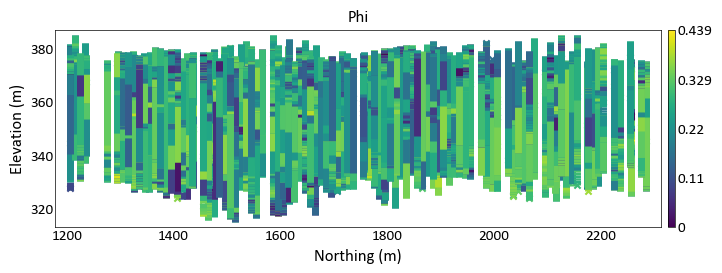
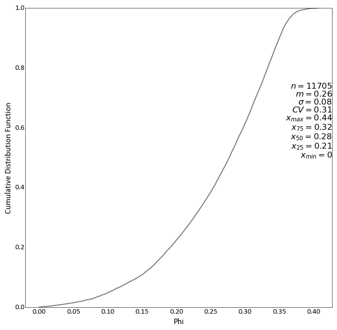
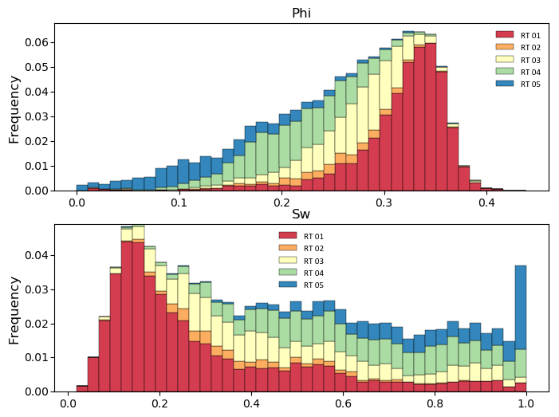
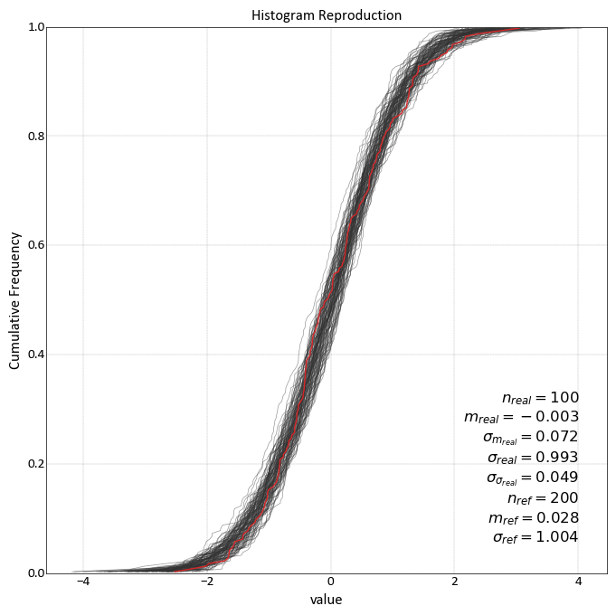
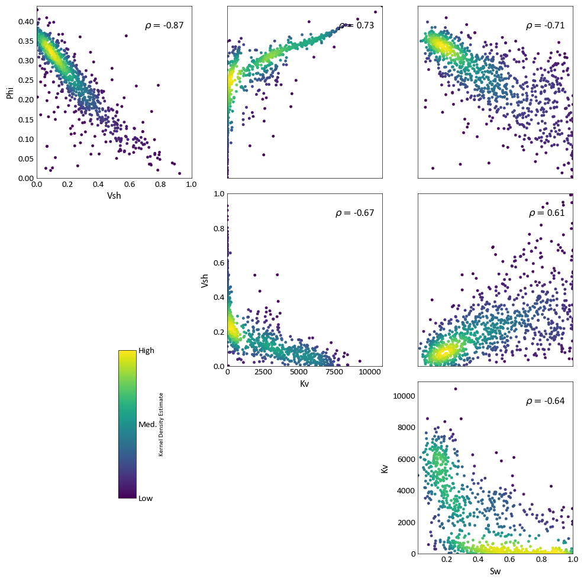
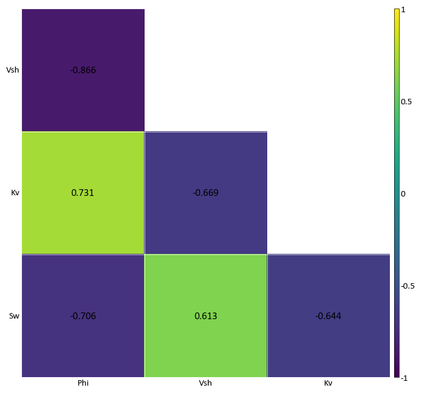
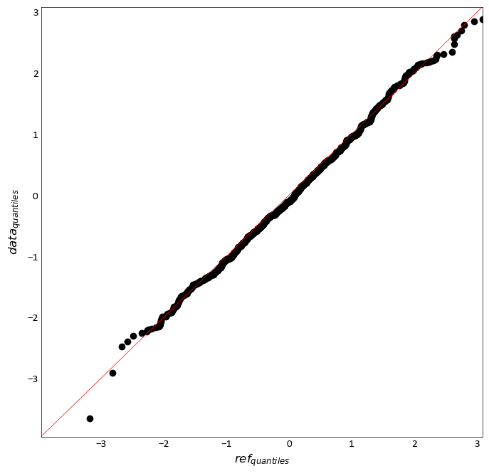
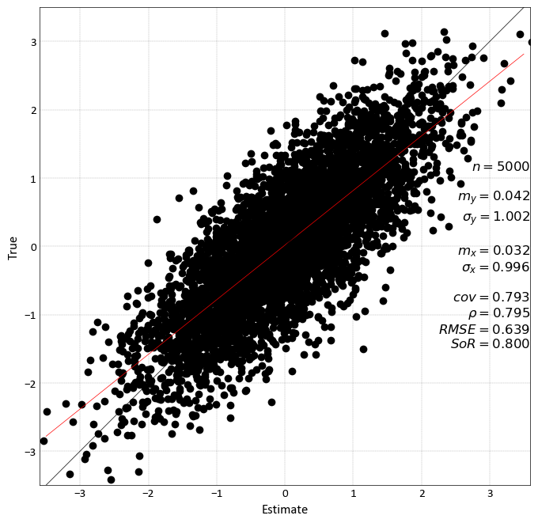
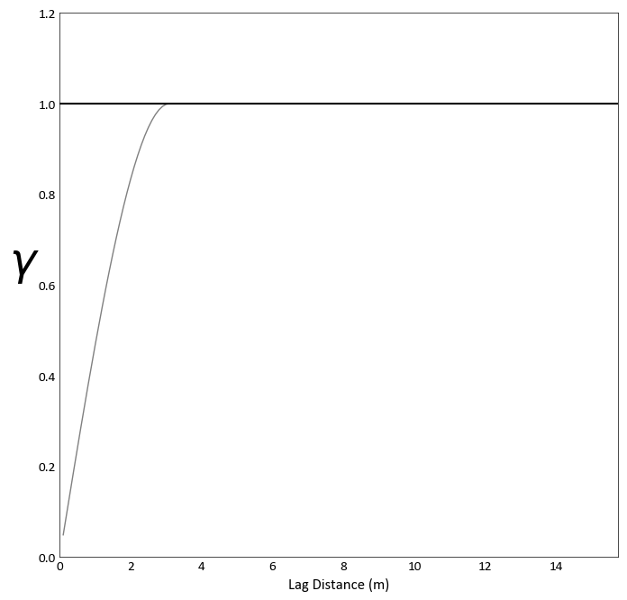

Plotting Functions¶
Plotting functions that are commonly required for geostatistical workflows have been wrapped within pygeostat. While most are coded with the intention of being plug and play, they can be used as a starting point and altered to the user’s needs.
Please report any bugs, annoyances, or possible enhancements.
Introduction to Plotting with pygeostat¶
The following section introduces some thoughts on plotting figures and utility functions.
Figure Sizes¶
The CCG paper template margin allows for 6 inches of working width space, if two plots are to be put side by side, they would have to be no more than 3 inches. This is why many of the plotting functions have a default width of 3 inches.
The UofA’s minimum requirement for a thesis states that the left and right margins can not be less than 1 inch each. As the CCG paper template is the limiting factor, a maximum figure size of 3 inches is still a good guideline.
Fonts¶
The CCG paper template uses Calibri, figure text should be the same. The minimum font size for CCG papers is 8 pt.
The UofA’s minimum requirement for a thesis allows the user to select their own fonts keeping readability in mind.
If you are exporting postscript figures, some odd behavior may occur. Matplotlib needs to be
instructed which type of fonts to export with them, this is handled by using gs.set_style() which is within many of the plotting functions. The font
may also be called within the postscript file as a byte string, the function gs.export_image() converts this into a working string.
You may find that when saving to a PDF document, the font you select is appearing bold. This happens
due to matplotlib using the same name for fonts within the same family. For example, if you specify
mpl.rcParams['font.family'] = 'Times New Roman' the bold and regular font may have the same name
causing the bold to be selected by default. A fix can be found here.
Selection of Colormaps and Colour Palettes¶
Continuous Colormaps
While the selection of colormaps may appear to be based on personal preference, there are many factors that must be accounted for when selecting a colormap. Will your figures be viewed by colour blind individuals? Will the figure possibly be printed in black and white? Is the colormap perceived by our minds as intended?
See http://www.research.ibm.com/people/l/lloydt/color/color.HTM for a more in depth discussion on colormap theory.
Example
Which illustrates the most detail in the data? Spoiler: inferno does, in my opinion :) (Warren Black)
Colour theory research has shown that the colormap jet may appear detailed due to the colour differential; however, our perception of the colours distort the data’s representation. The blue-white-red colormap is diverging, therefore structure in the data is implied.
Diverging colormaps should only be used if the underlying structure is understood and needs special representation.
The inferno and viridis colormaps are sequential, are perceptually uniform, can be printed as black and white, and are accessible to colour blind viewers. Unfortunately, the inferno color map is some what jarring, therefore pygeostat’s default colormap is viridis as it is more pleasing. Both are not available as of version 1.5.1 in matplotlib. For more info check out http://bids.github.io/colormap/ and http://matplotlib.org/style_changes.html
Digital Elevation Models
There are two custom colormaps available through pygeostat for visualizing digital elevation models.
topo1 and topo2 are available through the
gs.get_cmap() function. They won’t look as pixelated as
the examples below…I promise!
topo1
topo2
Categorical Colour Palettes
There are three colour palettes available through pygeostat for visualizing categorical data.
cat_pastel and cat_vibrant consist of 12 colours, and the third, cat_dark, has 6
available colours. They are available through the gs.get_palette() function. Issues arise when trying to represent a large
number of categorical variables at once as colours will being to converge, meaning categories may
appear to be the same colour.
cat_pastel
cat_vibrant
cat_dark
Changing Figure Aesthetics¶
Matplotlib is highly customizable in that font sizes, line widths, and other styling options can all
be changed to the users desires. However, this process can be confusing due to the number of options.
Matplotlib sources these settings from a dictionary called mpl.rcParams. These can either be
changed within a python session or permanently within the matplotlibrc file. For more discussion on
mpl.rcParams and what each setting is, visit http://matplotlib.org/users/customizing.html
As a means of creating a standard, a base pre-set style is set within pygeostat ccgpaper and some variables of it. They are accessible through the function gs.set_style(). If you’d like to review their settings, the source can be easily viewed from this documentation. If users with to use their own defined mpl.rcParams, the influence of gs.set_style() can be easily turned off so the custom settings are honored, or custom settings can be set through gs.set_style(). Make sure to check out the functionality of
gs.gsPlotStyle().
Dealing with Memory Leaks from Plotting¶
As HDF5 functionality is enhanced within pygoestat (see gs.DataFile()), loading large datasets into memory will become a viable option. Some plotting functions are being updated to be able to handle these file types, such as gs.histogram_plot_simulation(). If numerous plots are being generated in a loop, you may also notice that your systems physical memory is increasing without being dumped. This is a particular problem if large datasets are being loaded into memory.
Not sure as to the reason, but even if you reuse a name space, the old data attached to it is not removed until your systems memory is maxed out. Matplotlib also stores figures in a loop. The module gc has a function gc.collect() that will dump data not connected to a namespace in python.
The function gs.clrmplmem() dumps figure objects currently loaded and clears unused data from memory.
Accuracy Plot¶
-
pygeostat.plotting.accuracy_plot(truth=None, reals=None, mik_thresholds=None, acctype='sim', probability_increment=0.05, figsize=None, title=None, xlabel=None, ylabel=None, stat_blk='standard', stat_xy=(0.95, 0.05), stat_fontsize=None, ms=5, grid=None, axis_xy=None, ax=None, plot_style=None, custom_style=None, output_file=None, **kwargs)¶ Accuracy plot based on probability intervals quantified using an estimation technique e.g kriging. Currently, this plotting tool works based on using realizations to quantify the distrbution of estimation.
Two statistics block sets are available:
'minimal'and the default'standard'. The statistics block can be customized to a user defined list and order. Available statistics are as follows:>>> ['ndat', 'nint', 'avgvar', 'mse', 'acc', 'pre', 'goo']
Please review the documentation of the
gs.PlotStyle.set_style()andgs.export_image()functions for details on their parameters so that their use in this function can be understood.- Keyword Arguments
truth – Tidy (long-form) 1D data where a single column containing the true values. A pandas dataframe/series or numpy array can be passed
reals – Tidy (long-form) 2D data where a single column contains values from a single realizations and each row contains the simulated values from a single truth location. A pandas dataframe or numpy matrix can be passed
mik_thresholds (np.ndarray) – 1D array of the z-vals
mik_thresholdscorresponding to the probabilities defined in reals for each locationacctype (str) – Currently
simandmikare valid. ifmik_thresholdsis passed the type is assumed to bemikprobability_increment (float) – Probability increment used during accuracy_plot calculation
figsize (tuple) – Figure size (width, height)
title (str) – Title for the plot
xlabel (str) – X-axis label
ylabel (str) – Y-axis label
stat_blk (bool) – Indicate if statistics are plotted or not
stat_xy (float tuple) – X, Y coordinates of the annotated statistics in figure space. The coordinates specify the top right corner of the text block
stat_fontsize (float) – the fontsize for the statistics block. If None, based on gs.Parameters[‘plotting.stat_fontsize’]. If less than 1, it is the fraction of the matplotlib.rcParams[‘font.size’]. If greater than 1, it the absolute font size.
ms (float) – Size of scatter plot markers
grid (bool) – plots the major grid lines if True. Based on gs.Parameters[‘plotting.grid’] if None.
axis_xy (bool) – converts the axis to GSLIB-style axis visibility (only left and bottom visible) if axis_xy is True. Based on gs.Parameters[‘plotting.axis_xy’] if None.
ax (mpl.axis) – Matplotlib axis to plot the figure
pltstyle (str) – Use a predefined set of matplotlib plotting parameters as specified by
gs.GridDef. UseFalseorNoneto turn it offcust_style (dict) – Alter some of the predefined parameters in the
pltstyleselected.output_file (str) – Output figure file name and location
**kwargs – Optional permissible keyword arguments to pass to
gs.export_image()
- Returns
Matplotlib Axes object with the cross validation plot
- Return type
ax (ax)
Examples:
A simple call using truth and realization data:
import pygeostat as gs data_file = gs.ExampleData('accuracy_plot') reals = data_file[list(data_file.columns[1:])].values truth = data_file[list(data_file.columns)[0]].values gs.accuracy_plot(truth=truth, reals=reals)
Location Plot¶
-
pygeostat.plotting.location_plot(data, x=None, y=None, z=None, var=None, dhid=None, catdata=None, allcats=True, cbar=True, cbar_label=None, catdict=None, cmap=None, cax=None, vlim=None, title=None, plot_collar=True, collar_marker='x', collar_offset=0, lw=None, xlabel=None, ylabel=None, unit=None, griddef=None, orient='xy', slice_number=0, slicetol=None, xlim=None, ylim=None, ax=None, figsize=None, s=None, marker='o', rotateticks=None, sigfigs=3, grid=None, axis_xy=None, aspect=None, plot_style=None, custom_style=None, output_file=None, out_kws=None, return_cbar=False, return_plot=False, **kwargs)¶ location_plot displays scattered data on a 2-D XY plot. To plot gridded data with or without scattered data, please see
gs.slice_plot().The only required parameter is
dataif it is ags.DataFilethat contains the necessary coordinate column headers, data, and if required, a pointer to a validgs.GridDefclass. All other parameters are optional. Ifdatais ags.DataFileclass and does not contain all the required parameters or if it is a long-form table, the following parameters will need to be pass are needed:x,y,z, andgriddef. The three coordinate parameters may not be needed depending on whatorientis set to and of course if the dataset is 2-D or 3-D. The parametergriddefis required ifslicetolor `` slice_number`` is used. If parameterslice_numberandslicetolis not set then the default slice tolerance is half the cell width. If a negativeslicetolis passed or slice_number is set to None then all data will be plotted.slicetolis based on coordinate units.The values used to bound the data (i.e., vmin and vmax) are automatically calculated by default. These values are determined based on the number of significant figures and the sliced data; depending on data and the precision specified, scientific notation may be used for the colorbar tick lables. When point data shares the same colormap as the gridded data, the points displayed are integrated into the above calculation.
Please review the documentation of the
gs.set_style()andgs.export_image()functions for details on their parameters so that their use in this function can be understood.- Parameters
data (pd.DataFrame or gs.DataFile) – data containing coordinates and (optionally) var
x (str) – Column header of x-coordinate. Required if the conditions discussed above are not met
y (str) – Column header of y-coordinate. Required if the conditions discussed above are not met
z (str) – Column header of z-coordinate. Required if the conditions discussed above are not met
var (str) – Column header of the variable to use to colormap the points. Can also be a list of or single permissible matplotlib colour(s). If None and data is a DataFile, based on DataFile.variables if len(DataFile.variables) == 1. Otherwise, based on Parameters[‘plotting.location_plot.c’]
dhid (str) – Column header of drill hole ID.
catdata (bool) – Force categorical data
catdict (dict) – Dictionary containing the enumerated IDs alphabetic equivalent, which is drawn from Parameters[‘data.catdict’] if None
allcats (bool) – ensures that if categorical data is being plotted and plotted on slices, that the categories will be the same color between slices if not all categories are present on each slice
cbar (bool) – Indicate if a colorbar should be plotted or not
cbar_label (str) – Colorbar title
cmap (str) – A matplotlib colormap object or a registered matplotlib or pygeostat colormap name.
cax (Matplotlib.ImageGrid.cbar_axes) – color axis, if a previously created one should be used
vlim (float tuple) – Data minimum and maximum values
title (str) – Title for the plot. If left to it’s default value of
Noneor is set toTrue, a logical default title will be generated for 3-D data. Set toFalseif no title is desired.plot_collar (bool) – Option to plot the collar if the orient is xz or yz and the dhid is provided/inferred
collar_marker (str) – One of the permissible matplotlib markers, like ‘o’, or ‘+’… and others.
lw (float) – Line width value if the orient is xz or yz and the dhid is provided/inferred. Because lines or plotted instead of points.
xlabel (str) – X-axis label
ylabel (str) – Y-axis label
unit (str) – Unit to place inside the axis label parentheses
griddef (GridDef) – A pygeostat GridDef class created using
gs.GridDef. Required if using the argumentslicetolorient (str) – Orientation to slice data.
'xy','xz','yz'are t he only accepted valuesslice_number (int) – Grid cell location along the axis not plotted to take the slice of data to plot. None will plot all data
slicetol (float) – Slice tolerance to plot point data (i.e. plot +/-
slicetolfrom the center of the slice). Any negative value plots all data. Requiresslice_number. If aslice_numberis passed and noslicetolis set, then the default will half the cell width based on the griddef.xlim (float tuple) – X-axis limits. If None, based on data.griddef.extents(). If data.griddef is None, based on the limits of the data.
ylim (float tuple) – Y-axis limits. If None, based on data.griddef.extents(). If data.griddef is None, based on the limits of the data.
ax (mpl.axis) – Matplotlib axis to plot the figure
figsize (tuple) – Figure size (width, height)
s (float) – Size of location map markers
marker (str) – One of the permissible matplotlib markers, like ‘o’, or ‘+’… and others.
rotateticks (bool tuple) – Indicate if the axis tick labels should be rotated (x, y)
sigfigs (int) – Number of sigfigs to consider for the colorbar
grid (bool) – Plots the major grid lines if True. Based on Parameters[‘plotting.grid’] if None.
axis_xy (bool) – converts the axis to GSLIB-style axis visibility (only left and bottom visible) if axis_xy is True. Based on Parameters[‘plotting.axis_xy’] if None.
aspect (str) – Set a permissible aspect ratio of the image to pass to matplotlib. If None, it will be ‘equal’ if each axis is within 1/5 of the length of the other. Otherwise, it will be ‘auto’.
plot_style (str) – Use a predefined set of matplotlib plotting parameters as specified by
gs.GridDef. UseFalseorNoneto turn it offcustom_style (dict) – Alter some of the predefined parameters in the
plot_styleselected.output_file (str) – Output figure file name and location
out_kws (dict) – Optional dictionary of permissible keyword arguments to pass to
gs.export_image()return_cbar (bool) – Indicate if the colorbar axis should be returned. A tuple is returned with the first item being the axis object and the second the cbar object.
return_plot (bool) – Indicate if the plot from scatter should be returned. It can be used to create the colorbars required for subplotting with the ImageGrid()
**kwargs – Optional permissible keyword arguments to pass to matplotlib’s scatter function
- Returns
Matplotlib axis instance which contains the gridded figure
- Return type
ax (ax)
- Returns
Optional, default False. Matplotlib colorbar object
- Return type
cbar (cbar)
Examples:
A simple call:
import pygeostat as gs data_file = gs.ExampleData('point3d_ind_mv') gs.location_plot(data_file)
A simple call using a variable to color the data:
import pygeostat as gs data_file = gs.ExampleData('point3d_ind_mv') gs.location_plot(data_file, var = 'Phi')
Plotting along xz/yz orientation and use line plots based on drill hole id
import pygeostat as gs # load data data_file = gs.ExampleData('point3d_ind_mv') gs.location_plot(data_file, var='Phi', orient='yz', aspect =5, plot_collar = True)
Location plot for a categorical variable
import pygeostat as gs # load data data_file = gs.ExampleData('point3d_ind_mv') gs.location_plot(data_file, var='Lithofacies', orient='yz', aspect =5, plot_collar = True)
Code author: pygeostat team 2018-04-13
Histogram Plot¶
-
pygeostat.plotting.histogram_plot(data, var=None, weights=None, cat=None, catdict=None, bins=None, icdf=False, lower=None, upper=None, ax=None, figsize=None, xlim=None, ylim=None, title=None, xlabel=None, stat_blk=None, stat_xy=None, stat_ha=None, roundstats=None, sigfigs=None, color=None, edgecolor=None, edgeweights=None, grid=None, axis_xy=None, label_count=False, rotateticks=None, plot_style=None, custom_style=None, output_file=None, out_kws=None, stat_fontsize=None, stat_linespacing=None, logx=False, **kwargs)¶ Generates a matplotlib style histogram with summary statistics. Trimming is now only applied to NaN values (Pygeostat null standard).
The only required required parameter is
data. Ifxlabelis left to its default value ofNoneand the input data is contained in a pandas dataframe or series, the column information will be used to label the x-axis.Two statistics block sets are available:
'all'and the default'minimal'. The statistics block can be customized to a user defined list and order. Available statistics are as follows:>>> ['count', 'mean', 'stdev', 'cvar', 'max', 'upquart', 'median', 'lowquart', 'min', ... 'p10', 'p90']
The way in which the values within the statistics block are rounded and displayed can be controlled using the parameters
roundstatsandsigfigs.Please review the documentation of the
gs.set_style()andgs.export_image()functions for details on their parameters so that their use in this function can be understood.- Parameters
data (np.ndarray, pd.DataFrame/Series, or gs.DataFile) – data array, which must be 1D unless var is provided. The exception being a DataFile, if data.variables is a single name.
var (str) – name of the variable in data, which is required if data is not 1D.
weights (np.ndarray, pd.DataFrame/Series, or gs.DataFile or str) – 1D array of declustering weights for the data. Alternatively the declustering weights name in var. If data is a DataFile, it may be string in data.columns, or True to use data.weights (if data.weights is not None).
cat (bool or str) – either a cat column in data.data, or if True uses data.cat if data.cat is not None
catdict (dict or bool) – overrides bins. If a categorical variable is being plotted, provide a dictionary where keys are numeric (categorical codes) and values are their associated labels (categorical names). The bins will be set so that the left edge (and associated label) of each bar is inclusive to each category. May also be set to True, if data is a DataFile and data.catdict is initialized.
bins (int or list) – Number of bins to use, or a list of bins
icdf (bool) – Indicator to plot a CDF or not
lower (float) – Lower limit for histogram
upper (float) – Upper limit for histogram
ax (mpl.axis) – Matplotlib axis to plot the figure
figsize (tuple) – Figure size (width, height)
xlim (float tuple) – Minimum and maximum limits of data along the x axis
ylim (float tuple) – Minimum and maximum limits of data along the y axis
title (str) – Title for the plot
xlabel (str) – X-axis label
stat_blk (bool) – Indicate if statistics are plotted or not
stat_xy (float tuple) – X, Y coordinates of the annotated statistics in figure space. Based on Parameters[‘plotting.histogram_plot.stat_xy’] if a histogram and Parameters[‘plotting.histogram_plot.stat_xy’] if a CDF, which defaults to the top right when a PDF is plotted and the bottom right if a CDF is plotted.
stat_ha (str) – Horizontal alignment parameter for the annotated statistics. Can be
'right','left', or'center'. If None, based on Parameters[‘plotting.stat_ha’]stat_fontsize (float) – the fontsize for the statistics block. If None, based on Parameters[‘plotting.stat_fontsize’]. If less than 1, it is the fraction of the matplotlib.rcParams[‘font.size’]. If greater than 1, it the absolute font size.
roundstats (bool) – Indicate if the statistics should be rounded to the number of digits or to a number of significant figures (e.g., 0.000 vs. 1.14e-5). The number of digits or figures used is set by the parameter
sigfigs. sigfigs (int): Number of significant figures or number of digits (depending onroundstats) to display for the float statisticscolor (str or int or dict) – Any permissible matplotlib color or a integer which is used to draw a color from the pygeostat color pallet
pallet_pastel> May also be a dictionary of colors, which are used for each bar (useful for categories). colors.keys() must align with bins[:-1] if a dictionary is passed. Drawn from Parameters[‘plotting.cmap_cat’] if catdict is used and their keys align.edgecolor (str) – Any permissible matplotlib color for the edge of a histogram bar
grid (bool) – plots the major grid lines if True. Based on Parameters[‘plotting.grid’] if None.
axis_xy (bool) – converts the axis to GSLIB-style axis visibility (only left and bottom visible) if axis_xy is True. Based on Parameters[‘plotting.axis_xy’] if None.
label_count (bool) – label the number of samples found for each category in catdict. Does nothing if no catdict is found
rotateticks (bool tuple) – Indicate if the axis tick labels should be rotated (x, y)
plot_style (str) – Use a predefined set of matplotlib plotting parameters as specified by
gs.GridDef. UseFalseorNoneto turn it offcustom_style (dict) – Alter some of the predefined parameters in the
plot_styleselected.output_file (str) – Output figure file name and location
out_kws (dict) – Optional dictionary of permissible keyword arguments to pass to
gs.export_image()**kwargs – Optional permissible keyword arguments to pass to either: (1) matplotlib’s hist function if a PDF is plotted or (2) matplotlib’s plot function if a CDF is plotted.
- Returns
matplotlib Axes object with the histogram
- Return type
ax (ax)
Examples:
A simple call:
import pygeostat as gs # load some data dfl = gs.ExampleData("point3d_ind_mv") # plot the histogram_plot gs.histogram_plot(dfl, var="Phi", bins=30)
Change the colour, number of significant figures displayed in the statistics, and pass some keyword arguments to matplotlibs hist function:
import pygeostat as gs # load some data dfl = gs.ExampleData("point3d_ind_mv") # plot the histogram_plot gs.histogram_plot(dfl, var="Phi", color='#c2e1e5', sigfigs=5, log=True, density=True)
Plot a CDF while also displaying all available statistics, which have been shifted up:
import pygeostat as gs # load some data dfl = gs.ExampleData("point3d_ind_mv") # plot the histogram_plot gs.histogram_plot(dfl, var="Phi", icdf=True, stat_blk='all', stat_xy=(1, 0.75)) # Change the CDF line colour by grabbing the 3rd colour from the color pallet # ``cat_vibrant`` and increase its width by passing a keyword argument to matplotlib's # plot function. Also define a custom statistics block: gs.histogram_plot(dfl, var="Phi", icdf=True, color=3, lw=3.5, stat_blk=['count','upquart'])
Generate histograms of Phi considering the categories:
import pygeostat as gs # load some data dfl = gs.ExampleData("point3d_ind_mv") cats = [1, 2, 3, 4, 5] colors = gs.catcmapfromcontinuous("Spectral", 5).colors # build the required cat dictionaries dfl.catdict = {c: "RT {:02d}".format(c) for c in cats} colordict = {c: colors[i] for i, c in enumerate(cats)} # plot the histogram_plot f, axs = plt.subplots(2, 1, figsize=(8, 6)) for var, ax in zip(["Phi", "Sw"], axs): gs.histogram_plot(dfl, var=var, cat=True, color=colordict, bins=40, figsize=(8, 4), ax=ax, xlabel=False, title=var)
Generate cdf subplots considering the categories:
import pygeostat as gs # load some data dfl = gs.ExampleData("point3d_ind_mv") cats = [1, 2, 3, 4, 5] colors = gs.catcmapfromcontinuous("Spectral", 5).colors # build the required cat dictionaries dfl.catdict = {c: "RT {:02d}".format(c) for c in cats} colordict = {c: colors[i] for i, c in enumerate(cats)} # plot the histogram_plot f, axs = plt.subplots(2, 2, figsize=(12, 9)) axs=axs.flatten() for var, ax in zip(dfl.variables, axs): gs.histogram_plot(dfl, var=var, icdf=True, cat=True, color=colordict, ax=ax)
Recreate the Proportion class plot
import pygeostat as gs # load some data dfl = gs.ExampleData("point3d_ind_mv") cats = [1, 2, 3, 4, 5] colors = gs.catcmapfromcontinuous("Spectral", 5).colors # build the required cat dictionaries dfl.catdict = {c: "RT {:02d}".format(c) for c in cats} colordict = {c: colors[i] for i, c in enumerate(cats)} # plot the histogram_plot ax = gs.histogram_plot(dfl, cat=True, color=colordict, figsize=(7, 4), rotateticks=(45, 0), label_count=True)
Histogram Plot (Simulation Check)¶
-
pygeostat.plotting.histogram_plot_simulation(simulated_data, reference_data, reference_variable=None, reference_weight=None, reference_n_sample=None, simulated_column=None, griddef=None, nreal=None, n_subsample=None, simulated_limits=False, ax=None, figsize=None, xlim=None, title=None, xlabel=None, stat_blk='all', stat_xy=(0.95, 0.05), reference_color=None, simulation_color=None, alpha=None, lw=1, plot_style=None, custom_style=None, output_file=None, out_kws=None, sim_kws=None, **kwargs)¶ histogram_plot_simulation emulates the GSLIB histogram_plot_simulation program as a means of checking histogram reproduction of simulated realizations to the original histogram. Large realizations can be sub-sampled using a FORTRAN subroutine wrapped for python. The use of python generators is a very flexible and easy means of instructing this plotting function as to what to plot.
The function accepts five types of simulated input passed to the
simulated_dataargument:1-D array like data (numpy or pandas) containing 1 or more realizations of simulated data.
2-D array like data (numpy or pandas) with each column being a realization and each row being an observation.
List containing location(s) of realization file(s).
String containing the location of a folder containing realization files. All files in the folder are read in this case.Can contain
String with a wild card search(s) (e.g., ‘./data/realizations/*.out’)
Python generator object that yields a 1-D numpy array.
The function accepts two types of reference input passed to the
reference_dataargument:Array like data containing the reference variable
String containing the location of the reference data file (e.g., ‘./data/data.out’)
This function uses pygeostat for plotting and numpy to calculate statistics.
The only parameters required are
reference_dataandsimulated_data. If files are to be read or a 1-D array is passed, the parametersgriddefandnrealare required.simulated_columnis required for reading files as well. It is assumed that an equal number of realizations are within each file if multiple file locations are passed. Sub-sampling of datafiles can be completed by passing the parametern_subsample. If a file location is passed toreference_data, the parametersreference_variableandreference_n_sampleare required. All other arguments are optional or determined automatically if left at their default values. Ifxlabelis left to its default value ofNone, the column information will be used to label the axes if present. Three keyword dictionaries can be defined. (1)sim_kwswill be passed to pygeostat histogram_plot used for plotting realizations (2)out_kwswill be passed to the pygeostat exportfig function and (3)**kwargswill be passed to the pygeostat histogram_plot used to plot the reference data.Two statistics block sets are available:
'minimal'and the default'all'. The statistics block can be customized to a user defined list and order. Available statistics are as follows:>>> ['nreal', 'realavg', 'realavgstd', 'realstd', 'realstdstd', 'ndat', 'refavg', 'refstd']
Please review the documentation of the
gs.set_style()andgs.export_image()functions for details on their parameters so that their use in this function can be understood.- Parameters
simulated_data – Input simulation data
reference_data – Input reference data
- Keyword Arguments
reference_variable (int, str) – Required if sub-sampling reference data. The column containing the data to be sub-sampled
reference_weight – 1D dataframe, series, or numpy array of declustering weights for the data. Can also be a string of the column in the reference_data if reference_data is a string, or a bool if reference_data.weights is a string
reference_n_sample (int) – Required if sub-sampling reference data. The number of data within the reference data file to sample from
griddef (GridDef) – A pygeostat class GridDef created using
gs.GridDefsimulated_column (int) – column number in the simulated data file
nreal (int) – Required if sub-sampling simulation data. The total number of realizations that are being plotted. If a HDF5 file is passed, this parameter can be used to limit the amount of realizations plotted (i.e., the first
nrealrealizations)n_subsample (int) – Required if sub-sampling is used. The number of sub-samples to draw.
ax (mpl.axis) – Matplotlib axis to plot the figure
figsize (tuple) – Figure size (width, height)
xlim (float tuple) – Minimum and maximum limits of data along the x axis
title (str) – Title for the plot
xlabel (str) – X-axis label
stat_blk (str or list) – Indicate what preset statistics block to write or a specific list
stat_xy (str or float tuple) – X, Y coordinates of the annotated statistics in figure space. The default coordinates specify the bottom right corner of the text block
reference_color (str) – Colour of original histogram
simulation_color (str) – Colour of simulation histograms
alpha (float) – Transparency for realization variograms (0 = Transparent, 1 = Opaque)
lw (float) – Line width in points. The width provided in this parameter is used for the reference variogram, half of the value is used for the realization variograms.
plot_style (str) – Use a predefined set of matplotlib plotting parameters as specified by
gs.GridDef. UseFalseorNoneto turn it offcustom_style (dict) – Alter some of the predefined parameters in the
plot_styleselectedoutput_file (str) – Output figure file name and location
out_kws (dict) – Optional dictionary of permissible keyword arguments to pass to
gs.export_image()sim_kws – Optional dictionary of permissible keyword arguments to pass to
gs.histogram_plot()for plotting realization histograms and by extension, matplotlib’s plot function if the keyword passed is not used bygs.histogram_plot()**kwargs – Optional dictionary of permissible keyword arguments to pass to
gs.histogram_plot()for plotting the reference histogram and by extension, matplotlib’s plot function if the keyword passed is not used bygs.histogram_plot()
- Returns
matplotlib Axes object with the histogram reproduction plot
- Return type
ax (ax)
Examples:
import pygeostat as gs import pandas as pd # Global setting using Parameters gs.Parameters['data.griddef'] = gs.GridDef([10,1,0.5, 10,1,0.5, 2,1,0.5]) gs.Parameters['data.nreal'] = nreal = 100 size = gs.Parameters['data.griddef'].count(); reference_data = pd.DataFrame({'value':np.random.normal(0, 1, size = size)}) # Create example simulated data simulated_data =pd.DataFrame(columns=['value']) for i, offset in enumerate(np.random.rand(nreal)*0.04 - 0.02): simulated_data= simulated_data.append(pd.DataFrame({'value':np.random.normal(offset, 1, size = size)})) gs.histogram_plot_simulation(simulated_data, reference_data, reference_variable='value', title='Histogram Reproduction', grid=True)

Slice Plot¶
-
pygeostat.plotting.slice_plot(data, griddef=None, var=None, catdata=None, pointdata=None, pointvar=None, pointtol=None, pointkws=None, pointcmap=None, orient='xy', slice_number=0, ax=None, figsize=None, vlim=None, clim=None, title=None, xlabel=None, ylabel=None, unit=None, rotateticks=None, cbar=True, cbar_label=None, catdict=None, cbar_label_pad=None, cax=None, sigfigs=3, cmap=None, interp='none', aspect=None, grid=None, axis_xy=None, rasterize=False, plot_style=None, custom_style=None, output_file=None, out_kws=None, return_cbar=False, return_plot=False, slice_thickness=None, cbar_nticks=5, plotformat_dict=None, **kwargs)¶ slice_plot displays a 2D gridded dataset or a slice of a 3D gridded dataset. To plot only scattered data, please see
gs.location_plot()The only required parameters are
dataandgriddef. All other parameters are optional or calculated automatically. Axis tick labels are automatically checked for overlap and if needed, are rotated. The figure instance is always returned. To allow for easier modification, the colorbar object and the data used to generate the plot can also be returned. Examples of their use are provided bellow.The values use to bound the data (i.e., vmin and vmax) are automatically calculated by default. These values are determined based on the number of significant figures and the sliced data; depending on data and the precision specified, scientific notation may be used for the colorbar tick lables. When point data shares the same colormap as the gridded data, the points displayed are integrated into the above calculation.
Categorical data can be used, however
catdatawill need to be set toTruefor proper implementation. Categorical colour palettes are available within pygeostat. See the documentation forgs.get_palette()for more information.Please review the documentation of the
gs.set_style()andgs.export_image()functions for details on their parameters so that their use in this function can be understood.- Parameters
data – A numpy ndarray, pandas DataFrame or pygeostat DataFile, where each column is a variable and each row is an observation
griddef (GridDef) – A pygeostat GridDef class, which must be provided if a DataFile is not passed as data with a valid internal GridDef
gs.GridDefvar (str,int) – The name of the column within data to plot. If an int is provided, then it corresponds with the column number in data. If None, the first column of data is used.
catdata (bool) – Indicate if the data is categorical or not. Will be automatically set if less than Parameters[‘plotting.assumecat’] unique values are found within
datapointdata (DataFile) – A pygeostat DataFile class created using
gs.DataFilecontaing point data to overlay the gridded data with. Must have the necessary coordinate column headers stored within the class.pointvar (str) – Column header of variable to plot within
pointdataor a permissible matplotlib colourpointtol (float) – Slice tolerance to plot point data (i.e. plot +/-
pointtolfrom the center of the slice). Any negative value plots all data. Default is to plot all data.pointkws (dict) – Optional dictionary of permissible keyword arguments to pass to matplotlib’s scatter function. Default values is
{'marker':'o', 's':15}orient (str) – Orientation to slice data.
'xy','xz','yz'are the only accepted valuesslice_number (int) – Grid cell location along the axis not plotted to take the slice of data to plot
ax (mpl.axis) – Matplotlib axis to plot the figure
figsize (tuple) – Figure size (width, height)
vlim (float tuple) – Data minimum and maximum values
clim (int tuple) or (list) – Categorical data minimum and maximum values, Forces categorical colorbar to plot the full range of categorical values - even if none show in the plot. Can be either a tuple of integer values OR a list of integers.
title (str) – Title for the plot. If left to it’s default value of
Noneor is set toTrue, a logical default title will be generated for 3-D data. Set toFalseif no title is desired.xlabel (str) – X-axis label
ylabel (str) – Y-axis label
unit (str) – Unit to place inside the axis label parentheses
rotateticks (bool tuple) – Indicate if the axis tick labels should be rotated (x, y)
cbar (bool) – Indicate if a colorbar should be plotted or not
cbar_label (str) – Colorbar title
catdict (dict) – Dictionary to map enumerated catagories to names (e.g., {100: ‘Unit1’}). Taken from Parameters[‘data.catdict’] if catdata=True and its keys align.
sigfigs (int) – Number of sigfigs to consider for the colorbar
cmap (str) – Matplotlib or pygeostat colormap or palette
interp (str) – plt.imshow interpolation option;
'spline36'(continuous) and'hermite'(categorical) are good starting points if smoothing is desired.'none'is the default settingaspect (str) – Set a permissible aspect ratio of the image to pass to matplotlib. If None, it will be ‘equal’ if each axis is within 1/5 of the length of the other. Otherwise, it will be ‘auto’.
grid (bool) – Plots the major grid lines if True. Based on Parameters[‘plotting.grid’] if None.
axis_xy (bool) – converts the axis to GSLIB-style axis visibility (only left and bottom visible) if axis_xy is True. Based on Parameters[‘plotting.axis_xy’] if None.
rasterize (bool) – Indicate if the gridded image should be rasterized during export. The output resolution is depended on the DPI setting used during export.
plot_style (str) – Use a predefined set of matplotlib plotting parameters as specified by
gs.GridDef. UseFalseorNoneto turn it offcustom_style (dict) – Alter some of the predefined parameters in the
plot_styleselected.output_file (str) – Output figure file name and location
out_kws (dict) – Optional dictionary of permissible keyword arguments to pass to
gs.export_image()return_cbar (bool) – Indicate if the colorbar axis should be returned. A tuple is returned with the first item being the axis object and the second the cbar object.
return_plot (bool) – Indicate if the plot from imshow should be returned. It can be used to create the colorbars required for subplotting with the ImageGrid()
slice_thickness (int) – Number of slices around the selected slice_number to average the attributes
**kwargs – Optional permissible keyword arguments to pass to matplotlib’s imshow function
- Returns
ax (ax): Matplotlib axis instance which contains the gridded figure return_cbar: ax (ax), cbar (cbar): Optional, default False. Matplotlib colorbar object retrun_plot: ax (ax), plot(?): Optional, default False. Matplotlib colorbar object return_cbar & return_plot ax, plot, cbar: default False
- Return type
Default
Examples:
A simple call by passing the data file
import pygeostat as gs griddef = gs.GridDef([40,0.5,1,40,0.5,1,40,0.5,1]) data_file = gs.ExampleData('3d_grid', griddef) gs.slice_plot(data_file, orient='xy', cmap='viridis')
Plot with slice thickness averaging/upscaling:
import pygeostat as gs griddef = gs.GridDef([40,0.5,1,40,0.5,1,40,0.5,1]) data_file = gs.ExampleData('3d_grid', griddef) gs.slice_plot(data_file, orient='xy', cmap='viridis', slice_thickness=20)
Code author: pygeostat development team 2016-04-11
Scatter Plot¶
-
pygeostat.plotting.scatter_plot(x, y, wt=None, nmax=None, s=None, c=None, alpha=None, cmap=None, clim=None, cbar=False, cbar_label=None, stat_blk=None, stat_xy=None, stat_ha=None, stat_fontsize=None, roundstats=None, sigfigs=None, xlim=None, ylim=None, xlabel=None, ylabel=None, output_file=None, out_kws=None, title=None, grid=None, axis_xy=None, label='_nolegend_', ax=None, figsize=None, return_plot=False, logx=None, logy=None, **kwargs)¶ Scatter plot that mimics the GSLIB scatter_plot program, providing summary statistics, kernel density estimate coloring, etc. NaN values are treated as null and removed from the plot and statistics.
- Parameters
x (np.ndarray or pd.Series) – 1-D array with the variable to plot on the x-axis.
y (np.ndarray or pd.Series) – 1-D array with the variable to plot on the y-axis.
- Keyword Arguments
wt (np.ndarray or pd.DataFrame) – 1-D array with weights that are used in the calculation of displayed statistics.
s (float or np.ndarray or pd.Series) – size of each scatter point. Based on Parameters[‘plotting.scatter_plot.s’] if None.
c (color or np.ndarray or pd.Series) – color of each scatter point, as an array or valid Matplotlib color. Alternatively, ‘KDE’ may be specified to color each point according to its associated kernel density estimate. Based on Parameters[‘plotting.scatter_plot.c’] if None.
nmax (int) – specify the maximum number of scatter points that should be displayed, which may be necessary due to the time-requirements of plotting many data. If specified, a nmax-length random sub-sample of the data is plotted. Note that this does not impact summary statistics.
alpha (float) – opacity of the scatter. Based on Parameters[‘plotting.scatter_plot.alpha’] if None.
cmap (str) – A matplotlib colormap object or a registered matplotlib
clim (float tuple) – Data minimum and maximum values
cbar (bool) – Indicate if a colorbar should be plotted or not
cbar_label (str) – Colorbar title
stat_blk (str or list) – statistics to place in the plot, which should be ‘all’ or a list that may contain [‘count’, ‘pearson’, ‘spearman’, ‘noweightflag’]. Based on Parameters[‘plotting.scatter_plot.stat_blk’] if None. Set to False to disable.
stat_xy (float tuple) – X, Y coordinates of the annotated statistics in figure space. Based on Parameters[‘plotting.scatter_plot.stat_xy’] if None.
stat_ha (str) – Horizontal alignment parameter for the annotated statistics. Can be
'right','left', or'center'. If None, based on Parameters[‘plotting.stat_ha’]stat_fontsize (float) – the fontsize for the statistics block. If None, based on Parameters[‘plotting.stat_fontsize’]. If less than 1, it is the fraction of the matplotlib.rcParams[‘font.size’]. If greater than 1, it the absolute font size.
roundstats (bool) – Indicate if the statistics should be rounded to the number of digits or to a number of significant figures (e.g., 0.000 vs. 1.14e-5). The number of digits or figures used is set by the parameter
sigfigs. sigfigs (int): Number of significant figures or number of digits (depending onroundstats) to display for the float statistics. Based on Parameters[‘plotting.roundstats’] and Parameters[‘plotting.roundstats’] and Parameters[‘plotting.sigfigs’] if None.xlim (tuple) – x-axis limits - xlim[0] to xlim[1]. Based on the data if None
ylim (tuple) – y-axis limits - ylim[0] to ylim[1]. Based on the data if None.
xlabel (str) – label of the x-axis, extracted from x if None
ylabel (str) – label of the y-axis, extracted from y if None
output_file (str) – Output figure file name and location
out_kws (dict) – Optional dictionary of permissible keyword arguments to pass to
gs.export_image()title (str) – plot title
grid (bool) – plot grid lines in each panel? Based on Parameters[‘plotting.grid’] if None.
axis_xy (bool) – if True, mimic a GSLIB-style scatter_plot, where only the bottom and left axes lines are displayed. Based on Parameters[‘plotting.axis_xy’] if None.
label (str) – label of scatter for legend
ax (Matplotlib axis handle) – if None, create a new figure and axis handles
figsize (tuple) – size of the figure, if creating a new one when ax = None
logy (logx,) – permissible mpl axis scale, like log
**kwargs – Optional permissible keyword arguments to pass to either: (1) matplotlib’s scatter function
- Returns
ax(Matplotlib axis handle)
Examples:
Basic scatter example:
import pygeostat as gs # Load the data data_file = gs.ExampleData('point3d_ind_mv') # Select a couple of variables x, y = data_file[data_file.variables[0]], data_file[data_file.variables[1]] # Scatter plot with default parameters gs.scatter_plot(x, y, figsize=(5, 5), cmap='hot') # Scatter plot without correlation and with a color bar: gs.scatter_plot(x, y, nmax=2000, stat_blk=False, cbar=True, figsize=(5, 5)) # Scatter plot with the a constant color, transparency and all statistics # Also locate the statistics where they are better seen gs.scatter_plot(x, y, c='k', alpha=0.2, nmax=2000, stat_blk='all', stat_xy=(.95, .95), figsize=(5, 5))


Slice Plot¶
-
pygeostat.plotting.slice_plot(data, griddef=None, var=None, catdata=None, pointdata=None, pointvar=None, pointtol=None, pointkws=None, pointcmap=None, orient='xy', slice_number=0, ax=None, figsize=None, vlim=None, clim=None, title=None, xlabel=None, ylabel=None, unit=None, rotateticks=None, cbar=True, cbar_label=None, catdict=None, cbar_label_pad=None, cax=None, sigfigs=3, cmap=None, interp='none', aspect=None, grid=None, axis_xy=None, rasterize=False, plot_style=None, custom_style=None, output_file=None, out_kws=None, return_cbar=False, return_plot=False, slice_thickness=None, cbar_nticks=5, plotformat_dict=None, **kwargs) slice_plot displays a 2D gridded dataset or a slice of a 3D gridded dataset. To plot only scattered data, please see
gs.location_plot()The only required parameters are
dataandgriddef. All other parameters are optional or calculated automatically. Axis tick labels are automatically checked for overlap and if needed, are rotated. The figure instance is always returned. To allow for easier modification, the colorbar object and the data used to generate the plot can also be returned. Examples of their use are provided bellow.The values use to bound the data (i.e., vmin and vmax) are automatically calculated by default. These values are determined based on the number of significant figures and the sliced data; depending on data and the precision specified, scientific notation may be used for the colorbar tick lables. When point data shares the same colormap as the gridded data, the points displayed are integrated into the above calculation.
Categorical data can be used, however
catdatawill need to be set toTruefor proper implementation. Categorical colour palettes are available within pygeostat. See the documentation forgs.get_palette()for more information.Please review the documentation of the
gs.set_style()andgs.export_image()functions for details on their parameters so that their use in this function can be understood.- Parameters
data – A numpy ndarray, pandas DataFrame or pygeostat DataFile, where each column is a variable and each row is an observation
griddef (GridDef) – A pygeostat GridDef class, which must be provided if a DataFile is not passed as data with a valid internal GridDef
gs.GridDefvar (str,int) – The name of the column within data to plot. If an int is provided, then it corresponds with the column number in data. If None, the first column of data is used.
catdata (bool) – Indicate if the data is categorical or not. Will be automatically set if less than Parameters[‘plotting.assumecat’] unique values are found within
datapointdata (DataFile) – A pygeostat DataFile class created using
gs.DataFilecontaing point data to overlay the gridded data with. Must have the necessary coordinate column headers stored within the class.pointvar (str) – Column header of variable to plot within
pointdataor a permissible matplotlib colourpointtol (float) – Slice tolerance to plot point data (i.e. plot +/-
pointtolfrom the center of the slice). Any negative value plots all data. Default is to plot all data.pointkws (dict) – Optional dictionary of permissible keyword arguments to pass to matplotlib’s scatter function. Default values is
{'marker':'o', 's':15}orient (str) – Orientation to slice data.
'xy','xz','yz'are the only accepted valuesslice_number (int) – Grid cell location along the axis not plotted to take the slice of data to plot
ax (mpl.axis) – Matplotlib axis to plot the figure
figsize (tuple) – Figure size (width, height)
vlim (float tuple) – Data minimum and maximum values
clim (int tuple) or (list) – Categorical data minimum and maximum values, Forces categorical colorbar to plot the full range of categorical values - even if none show in the plot. Can be either a tuple of integer values OR a list of integers.
title (str) – Title for the plot. If left to it’s default value of
Noneor is set toTrue, a logical default title will be generated for 3-D data. Set toFalseif no title is desired.xlabel (str) – X-axis label
ylabel (str) – Y-axis label
unit (str) – Unit to place inside the axis label parentheses
rotateticks (bool tuple) – Indicate if the axis tick labels should be rotated (x, y)
cbar (bool) – Indicate if a colorbar should be plotted or not
cbar_label (str) – Colorbar title
catdict (dict) – Dictionary to map enumerated catagories to names (e.g., {100: ‘Unit1’}). Taken from Parameters[‘data.catdict’] if catdata=True and its keys align.
sigfigs (int) – Number of sigfigs to consider for the colorbar
cmap (str) – Matplotlib or pygeostat colormap or palette
interp (str) – plt.imshow interpolation option;
'spline36'(continuous) and'hermite'(categorical) are good starting points if smoothing is desired.'none'is the default settingaspect (str) – Set a permissible aspect ratio of the image to pass to matplotlib. If None, it will be ‘equal’ if each axis is within 1/5 of the length of the other. Otherwise, it will be ‘auto’.
grid (bool) – Plots the major grid lines if True. Based on Parameters[‘plotting.grid’] if None.
axis_xy (bool) – converts the axis to GSLIB-style axis visibility (only left and bottom visible) if axis_xy is True. Based on Parameters[‘plotting.axis_xy’] if None.
rasterize (bool) – Indicate if the gridded image should be rasterized during export. The output resolution is depended on the DPI setting used during export.
plot_style (str) – Use a predefined set of matplotlib plotting parameters as specified by
gs.GridDef. UseFalseorNoneto turn it offcustom_style (dict) – Alter some of the predefined parameters in the
plot_styleselected.output_file (str) – Output figure file name and location
out_kws (dict) – Optional dictionary of permissible keyword arguments to pass to
gs.export_image()return_cbar (bool) – Indicate if the colorbar axis should be returned. A tuple is returned with the first item being the axis object and the second the cbar object.
return_plot (bool) – Indicate if the plot from imshow should be returned. It can be used to create the colorbars required for subplotting with the ImageGrid()
slice_thickness (int) – Number of slices around the selected slice_number to average the attributes
**kwargs – Optional permissible keyword arguments to pass to matplotlib’s imshow function
- Returns
ax (ax): Matplotlib axis instance which contains the gridded figure return_cbar: ax (ax), cbar (cbar): Optional, default False. Matplotlib colorbar object retrun_plot: ax (ax), plot(?): Optional, default False. Matplotlib colorbar object return_cbar & return_plot ax, plot, cbar: default False
- Return type
Default
Examples:
A simple call by passing the data file
import pygeostat as gs griddef = gs.GridDef([40,0.5,1,40,0.5,1,40,0.5,1]) data_file = gs.ExampleData('3d_grid', griddef) gs.slice_plot(data_file, orient='xy', cmap='viridis')
Plot with slice thickness averaging/upscaling:
import pygeostat as gs griddef = gs.GridDef([40,0.5,1,40,0.5,1,40,0.5,1]) data_file = gs.ExampleData('3d_grid', griddef) gs.slice_plot(data_file, orient='xy', cmap='viridis', slice_thickness=20)
Code author: pygeostat development team 2016-04-11
Slice Plot (Grids)¶
-
pygeostat.plotting.grid_slice_plot(data, griddef=None, super_xlabel=True, super_ylabel=True, super_title=None, ncol=None, nrow=None, start_slice=None, end_slice=None, figsize=None, n_slice=None, slice_title=True, unit=None, plot_style=None, custom_style=None, output_file=None, out_kws=None, cbar_label=None, axpad=0.15, cbar_cats=None, ntickbins=None, axfuncs=None, label_mode='L', **kwargs)¶ grid_slice_plot can be used to automatically generate set of slices through a 3D gridded realization. Given some target number of rows, columns, orientation and slice ranges through the realization, this function will automatically generate the slice_plot slices and arrange them according to the specified dimensions. It is possible to pass keyword arguments for slice_plot to this function in order to specify the format of the slice_plots. So, adding data locations, different colormaps, and other slice_plot formatting is permitted for all subplots by passing those slice_plot arguments to this function. See
gs.slice_plot()for the full list of permissable kwargs.Updates April 2016 - use a ImageGrid subplots to get the job done
- Parameters
data (array, dataframe) – array of data, passed directly to slice_plot()
griddef (pygeostat griddef) – pygeostat grid definitions, passed directly to slice_plot()
super_xlabel (str) – super x axis label
super_ylabel (str) – super y axis label
super_title (str) – super title for the subplots
ncol (int) – the number of columns considered for the subplots (may change)
nrow (int) – the number of rows considered for the subplots (may change)
start_slice (int) – the starting slice to be plotted
end_slice (int) – the end slice to be plotted
figsize (tuple) – size of the figure to be created
n_slice (int) – the number of desired slices
slice_title (bool) – either plot the orientation and slice no on top of each slice, or dont!
unit (str) – Unit to place inside the axis label parentheses
plot_style (str) – Use a predefined set of matplotlib plotting parameters as specified by
gs.GridDef. UseFalseorNoneto turn it offcustom_style (dict) – Alter some of the predefined parameters in the
plot_styleselected.output_file (str) – Output figure file name and location
out_kws (dict) – Optional dictionary of permissible keyword arguments to pass to
gs.exportimg()cbar_label (str) – colorbar title
axpad (float) – figure points padding applied to the axes, vertical padding is further modified to account for the slice titles, if required
ntickbins (int or tuple) – The number of tick bins for both axes, or the (x, y) respectively
axfuncs (function or list of functions) – External function(s) that takes ax slice_number and orient as keyword arguments, does not return anything
label_mode (str) – default ‘L’, or ‘all’, passed to the ImageGrid() constructor
**kwargs – NOTE the arguments here are either valid slice_plot (including all keyword) dictionary arguments, or valid imshow and valid imshow keyword arguments. If errors are thrown from invalid arguments it is likely that something that shouldnt have been passed to imshow was passed. Check and double check those **kwargs!
- Returns
figure handle
- Return type
fig (plt.figure)
Examples:
A simple call: generates a set of slices through the model
import pygeostat as gs # load some data data = gs.ExampleData('3d_grid',griddef = gs.GridDef([40,1,2,40,1,2,40,0.5,1])) # plot the grid slices _ = gs.grid_slice_plot(data)
Possible to specify the orientation and the number of slices:
import pygeostat as gs # load some data data = gs.ExampleData('3d_grid',griddef = gs.GridDef([40,1,2,40,1,2,40,0.5,1])) # plot the grid slices _ = gs.grid_slice_plot(data, orient='xz', n_slice=5)

Can specify the number of rows or columns required for the slices:
import pygeostat as gs # load some data data = gs.ExampleData('3d_grid',griddef = gs.GridDef([40,1,2,40,1,2,40,0.5,1])) # plot the grid slices _ = gs.grid_slice_plot(data, orient='xz', n_slice=6, ncol=2, nrow=3)
- Also able to specify slice_plot kwargs using this function, so we can apply consistent
custom formatting to all of the subplots:
import pygeostat as gs # load some data data = gs.ExampleData('3d_grid',griddef = gs.GridDef([40,1,2,40,1,2,40,0.5,1])) # plot the grid slices _ = gs.grid_slice_plot(data, nrow=2, ncol=5, start_slice=10, end_slice=25, n_slice=10, cmap='hot', vlim=(-3,3))

Scatter Plot (Multivariate)¶
The function gs.scatter_plots() can be used to study multivariate relationships by plotting the bivariate relationships between different variables.
-
pygeostat.plotting.scatter_plots(data, variables=None, wt=None, labels=None, nmax=None, pad=0.0, s=None, c=None, alpha=None, cmap=None, clim=None, cbar=True, cbar_label=None, stat_blk=None, stat_xy=None, stat_ha=None, stat_fontsize=None, roundstats=None, sigfigs=None, grid=None, axis_xy=None, xlim=None, ylim=None, label='_nolegend_', output_file=None, out_kws=None, figsize=None, **kwargs)¶ Function which wraps the scatter_plot function, creating an upper matrix triangle of scatterplots for multiple variables.
- Parameters
data (np.ndarray or pd.DataFrame or gs.DataFile) – 2-D data array, which should be dimensioned as (ndata, nvar). Alternatively, specific variables may be selected with the variables argument. If a DataFile is passed and data.variables has a length greater than 1, those columns will be treated as the variables to plot.
- Keyword Arguments
variables (str list) – indicates the column names to treat as variables in data
wt (np.ndarray or pd.Series or str or bool) – array with weights that are used in the calculation of displayed statistics. Alternatively, a str may specify the weight column in lower. If data is a DataFile and data.wts is not None, then wt=True may be used to apply those weights.
labels (tuple or nvar-list) – labels for data, which are drawn from data if None
nmax (int) – specify the maximum number of scatter points that should be displayed, which may be necessary due to the time-requirements of plotting many data. If specified, a nmax-length random sub-sample of the data is plotted. Note that this does not impact summary statistics.
pad (float or 2-tuple) – space between each panel, which may be negative or positive. A tuple of (xpad, ypad) may also be used.
align_orient (bool) – align the orientation of plots in the upper and lower triangle (True), which causes the lower triangle plots to be flipped (x and y axes) from their standard symmetric orientation.
titles (2-tuple str) – titles of the lower and upper triangles (lower title, upper title)
titlepads (2-tuple float) – padding of the titles to the left of the lower triangle titlepads[0] and above the upper triangle (titlepads[1]). Typical required numbers are in the range of 0.01 to 0.5, depending on figure dimensioning.
titlesize (int) – size of the title font
s (float or np.ndarray or pd.Series) – size of each scatter point. Based on Parameters[‘plotting.scatter_plot.s’] if None.
c (color or np.ndarray or pd.Series) – color of each scatter point, as an array or valid Matplotlib color. Alternatively, ‘KDE’ may be specified to color each point according to its associated kernel density estimate. Based on Parameters[‘plotting.scatter_plot.c’] if None.
alpha (float) – opacity of the scatter. Based on Parameters[‘plotting.scatter_plot.alpha’] if None.
cmap (str) – A matplotlib colormap object or a registered matplotlib
clim (2-tuple float) – Data minimum and maximum values
cbar (bool) – plot a colorbar for the color of the scatter (if variable)? (default=True)
cbar_label (str) – colorbar label(automated if KDE coloring)
stat_blk (str or tuple) – statistics to place in the plot, which should be ‘all’ or a tuple that may contain [‘count’, ‘pearson’, ‘spearman’]. Based on Parameters[‘plotting.scatter_plot.stat_blk’] if None. Set to False to disable.
stat_xy (2-tuple float) – X, Y coordinates of the annotated statistics in figure space. Based on Parameters[‘plotting.scatter_plot.stat_xy’] if None.
stat_ha (str) – Horizontal alignment parameter for the annotated statistics. Can be
'right','left', or'center'. If None, based on Parameters[‘plotting.stat_ha’]stat_fontsize (float) – the fontsize for the statistics block. If None, based on Parameters[‘plotting.stat_fontsize’]. If less than 1, it is the fraction of the matplotlib.rcParams[‘font.size’]. If greater than 1, it the absolute font size.
roundstats (bool) – Indicate if the statistics should be rounded to the number of digits or to a number of significant figures (e.g., 0.000 vs. 1.14e-5). The number of digits or figures used is set by the parameter
sigfigs. sigfigs (int): Number of significant figures or number of digits (depending onroundstats) to display for the float statistics. Based on Parameters[‘plotting.roundstats’] and Parameters[‘plotting.roundstats’] and Parameters[‘plotting.sigfigs’] if None.grid (bool) – plot grid lines in each panel? Based on Parameters[‘plotting.grid’] if None.
axis_xy (bool) – if True, mimic a GSLIB-style scatter_plot, where only the bottom and left axes lines are displayed. Based on Parameters[‘plotting.axis_xy’] if None.
xlim (2-tuple float) – x-axis limits - xlim[0] to xlim[1]. Based on the data if None
ylim (2-tuple float) – y-axis limits - ylim[0] to ylim[1]. Based on the data if None.
label (str) – label of scatter for legend
output_file (str) – Output figure file name and location
out_kws (dict) – Optional dictionary of permissible keyword arguments to pass to
gs.export_image()figsize (2-tuple float) – size of the figure, if creating a new one when ax = None
return_handles (bool) – return figure handles? (default=False)
**kwargs – Optional permissible keyword arguments to pass to either: (1) matplotlib’s scatter function
- Returns
matplotlib figure handle
Example:
Only one basic example is provided here, although all kwargs applying to the underlying scatter_plot function may be applied to scatter_plots.
import pygeostat as gs # Load the data, which registers the variables attribute data_file = gs.ExampleData('point3d_ind_mv') # Plot with the default KDE coloring fig = gs.scatter_plots(data_file, nmax=1000, stat_xy=(0.95, 0.95), pad=(-1, -1), s=10, figsize=(10, 10))
Scatter Plot (Multivariate-Comparison)¶
The function gs.scatter_plots_lu() provides the option to have a multivariate comparison between two data sets (e.g. test and training).
-
pygeostat.plotting.scatter_plots_lu(lower, upper, lower_variables=None, upper_variables=None, lowwt=None, uppwt=None, lowlabels=None, upplabels=None, nmax=None, pad=0.0, align_orient=False, titles=None, titlepads=None, titlesize=None, s=None, c=None, alpha=None, cbar=True, cbar_label=None, cmap=None, clim=None, stat_blk=None, stat_xy=None, stat_ha=None, stat_fontsize=None, roundstats=None, sigfigs=None, xlim=None, ylim=None, label='_nolegend_', output_file=None, out_kws=None, grid=True, axis_xy=None, figsize=None, return_handle=False, **kwargs)¶ Function which wraps the scatter_plot function, creating an upper/lower matrix triangle of scatterplots for comparing the scatter of multiple variables in two data sets.
- Parameters
lower (np.ndarray or pd.DataFrame or gs.DataFile) – 2-D data array, which should be dimensioned as (ndata, nvar). Alternatively, specific variables may be selected with the variables argument. If a DataFile is passed and data.variables has a length greater than 1, those columns will be treated as the variables to plot. This data is plotted in the lower triangle.
upper (np.ndarray or pd.DataFrame or gs.DataFile) – see the description for lower, although this data is plotted in the upper triangle.
- Keyword Arguments
lower_variables (nvar-tuple str) – indicates the column names to treat as variables in lower
upper_variables (nvar-tuple str) – indicates the column names to treat as variables in upper
lowwt (np.ndarray or pd.Series or str or bool) – array with weights that are used in the calculation of displayed statistics for the lower data. Alternatively, a str may specify the weight column in lower. If lower is a DataFile and lower.wt is not None, then wt=True may be used to apply those weights.
uppwt (np.ndarray or pd.DataFrame or str or bool) – see the description for lowwt, although these weights are applied to upper.
lowlabels (nvar-tuple str) – labels for lower, which are drawn from lower if None
upplabels (nvar-tuple str) – labels for upper, which are drawn from upper if None
nmax (int) – specify the maximum number of scatter points that should be displayed, which may be necessary due to the time-requirements of plotting many data. If specified, a nmax-length random sub-sample of the data is plotted. Note that this does not impact summary statistics.
pad (float or 2-tuple) – space between each panel, which may be negative or positive. A tuple of (xpad, ypad) may also be used.
align_orient (bool) – align the orientation of plots in the upper and lower triangle (True), which causes the lower triangle plots to be flipped (x and y axes) from their standard symmetric orientation.
titles (2-tuple str) – titles of the lower and upper triangles (lower title, upper title)
titlepads (2-tuple float) – padding of the titles to the left of the lower triangle titlepads[0] and above the upper triangle (titlepads[1]). Typical required numbers are in the range of 0.01 to 0.5, depending on figure dimensioning.
titlesize (int) – size of the title font
s (float or np.ndarray or pd.Series) – size of each scatter point. Based on Parameters[‘plotting.scatter_plot.s’] if None.
c (color or np.ndarray or pd.Series) – color of each scatter point, as an array or valid Matplotlib color. Alternatively, ‘KDE’ may be specified to color each point according to its associated kernel density estimate. Based on Parameters[‘plotting.scatter_plot.c’] if None.
alpha (float) – opacity of the scatter. Based on Parameters[‘plotting.scatter_plot.alpha’] if None.
cmap (str) – A matplotlib colormap object or a registered matplotlib
clim (2-tuple float) – Data minimum and maximum values
cbar (bool) – plot a colorbar for the color of the scatter (if variable)? (default=True)
cbar_label (str) – colorbar label(automated if KDE coloring)
stat_blk (str or tuple) – statistics to place in the plot, which should be ‘all’ or a tuple that may contain [‘count’, ‘pearson’, ‘spearman’]. Based on Parameters[‘plotting.scatter_plot.stat_blk’] if None. Set to False to disable.
stat_xy (2-tuple float) – X, Y coordinates of the annotated statistics in figure space. Based on Parameters[‘plotting.scatter_plot.stat_xy’] if None.
stat_ha (str) – Horizontal alignment parameter for the annotated statistics. Can be
'right','left', or'center'. If None, based on Parameters[‘plotting.stat_ha’]stat_fontsize (float) – the fontsize for the statistics block. If None, based on Parameters[‘plotting.stat_fontsize’]. If less than 1, it is the fraction of the matplotlib.rcParams[‘font.size’]. If greater than 1, it the absolute font size.
roundstats (bool) – Indicate if the statistics should be rounded to the number of digits or to a number of significant figures (e.g., 0.000 vs. 1.14e-5). The number of digits or figures used is set by the parameter
sigfigs. sigfigs (int): Number of significant figures or number of digits (depending onroundstats) to display for the float statistics. Based on Parameters[‘plotting.roundstats’] and Parameters[‘plotting.roundstats’] and Parameters[‘plotting.sigfigs’] if None.grid (bool) – plot grid lines in each panel? Based on Parameters[‘plotting.grid’] if None.
axis_xy (bool) – if True, mimic a GSLIB-style scatter_plot, where only the bottom and left axes lines are displayed. Based on Parameters[‘plotting.axis_xy’] if None.
xlim (2-tuple float) – x-axis limits - xlim[0] to xlim[1]. Based on the data if None
ylim (2-tuple float) – y-axis limits - ylim[0] to ylim[1]. Based on the data if None.
label (str) – label of scatter for legend
output_file (str) – Output figure file name and location
out_kws (dict) – Optional dictionary of permissible keyword arguments to pass to
gs.export_image()figsize (2-tuple float) – size of the figure, if creating a new one when ax = None
return_handles (bool) – return figure handles? (default=False)
**kwargs – Optional permissible keyword arguments to pass to either: (1) matplotlib’s scatter function
- Returns
matplotlib figure handle
Examples:
Plot with varying orientations that provide correct symmetry (above) and ease of comparison (below). Here, the data is treated as both the data and a realization (first two arguments) for the sake of demonstration.
import pygeostat as gs import numpy as np # Load the data, which registers the variables attribute data_file1 = gs.ExampleData('point3d_ind_mv') data_file2 = gs.ExampleData('point3d_ind_mv') mask = np.random.rand(len(data_file2))<0.3 data_file2.data = data_file2.data[mask] # Plot with the standard orientation fig = gs.scatter_plots_lu(data_file1, data_file2, titles=('Data', 'Realization'), s=10, nmax=1000, stat_xy=(0.95, 0.95), pad=(-1, -1), figsize=(10, 10)) # Plot with aligned orientation to ease comparison fig = gs.scatter_plots_lu(data_file1, data_file2, titles=('Data', 'Realization'), s=10, nmax=1000, stat_xy=(0.95, 0.95), pad=(-1, -1), figsize=(10, 10), cmap='jet', align_orient=True)


Correlation Matrix Plot¶
-
pygeostat.plotting.correlation_matrix_plot(correlation_data, figsize=None, ax=None, cax=None, title=None, xticklabels=None, ticklabels=None, yticklabels=None, rotateticks=None, cbar=None, annotation=None, lower_matrix=False, lw=0.5, hierarchy=None, dendrogram=False, vlim=(-1, 1), cbar_label=None, cmap=None, plot_style=None, custom_style=None, output_file=None, out_kws=None, sigfigs=3, **kwargs)¶ This function uses matplotlib to create a correlation matrix heatmap illustrating the correlation coefficient between each pair of variables.
The only parameter needed is the correlation matrix. All of the other arguments are optional. Figure size will likely have to be manually adjusted. If the label parameters are left to their default value of
Noneand the input matrix is contained in a pandas dataframe, the index/column information will be used to label the columns and rows. If a numpy array is passed, axis tick labels will need to be provided. Axis tick labels are automatically checked for overlap and if needed, are rotated. If rotation is necessary, consider condensing the variables names or plotting a larger figure as the result is odd. Ifcbaris left to its default value ofNone, a colorbar will only be plotted if thelower_matrixis set to True. It can also be turned on or off manually. Ifannotationis left to its default value ofNone, annotations will only be placed if a full matrix is being plotted. It can also be turned on or off manually.The parameter
ticklabelsis odd in that it can take a few forms, all of which are a tuple with the first value controlling the x-axis and second value controlling the y-axis (x, y). If left to its default ofNone, another pygeostat function will check to see if the labels overlap, if so it will rotate the axis labels by a default angle of (45, -45) if required. If a value ofTrueis pased for either axis, the respective default values previously stated is used. If either value is a float, that value is used to rotate the axis labels.The correlation matrix can be ordered based on hierarchical clustering. The following is a list of permissible arguments:
'single', 'complete', 'average', 'weighted', 'centroid', 'median', 'ward'. The denrogram if plotted will have a height equal to 15% the height of the correlation matrix. This is currently hard coded.Please review the documentation of the
gs.set_style()andgs.export_image()functions for details on their parameters so that their use in this function can be understood.- Parameters
correlation_data – Pandas dataframe or numpy matrix containing the required loadings or correlation matrix
figsize (tuple) – Figure size (width, height)
ax (mpl.axis) – Matplotlib axis to plot the figure
title (str) – Title for the plot
ticklabels (list) – Tick labels for both axes
xticklabels (list) – Tick labels along the x-axis (overwritten if ticklabels is passed)
yticklabels (list) – Tick labels along the y-axis (overwritten if ticklabels is passed)
rotateticks (bool or float tuple) – Bool or float values to control axis label rotations. See above for more info.
cbar (bool) – Indicate if a colorbar should be plotted or not
annotation (bool) – Indicate if the cells should be annotationated or not
lower_matrix (bool) – Indicate if only the lower matrix should be plotted
lw (float) – Line width of lines in correlation matrix
hierarchy (str) – Indicate the type of hieriarial clustering to use to reorder the correlation matrix. Please see above for more details
dendrogram (bool) – Indicate if a dendrogram should be plotted. The argument
hierarchymust be set totruefor this argument to have any effectvlim (tuple) – vlim for the data on the correlation_matrix_plot, default = (-1, 1)
cbar_label (str) – string for the colorbar label
cmap (str) – valid Matplotlib colormap
plot_style (str) – Use a predefined set of matplotlib plotting parameters as specified by
gs.GridDef. UseFalseorNoneto turn it offcustom_style (dict) – Alter some of the predefined parameters in the
plot_styleselected.output_file (str) – Output figure file name and location
out_kws (dict) – Optional dictionary of permissible keyword arguments to pass to
gs.export_image()sigfigs (int) – significant digits for labeling of colorbar and cells
**kwargs – Optional permissible keyword arguments to pass to matplotlib’s pcolormesh function
- Returns
matplotlib Axes object with the correlation matrix plot
- Return type
ax (ax)
- Examples:
Calculate the correlation matrix variables in a pandas dataframe
import pygeostat as gs data_file = gs.ExampleData("point3d_ind_mv") data = data_file[data_file.variables] data_cor = data.corr() gs.correlation_matrix_plot(data_cor, cmap = 'bwr')
Again for illustration, convert the correlation dataframe into a numpy matrix. By using a numpy matrix, the axis labels will need to me manually entered. Reduce the figure size as well:
import pygeostat as gs data_file = gs.ExampleData("point3d_ind_mv") data = data_file[data_file.variables] data_cor = data.corr() gs.correlation_matrix_plot(data_cor.values, cmap = 'bwr')

Plotting a lower correlation matrix while having annotations:
import pygeostat as gs data_file = gs.ExampleData("point3d_ind_mv") data = data_file[data_file.variables] data_cor = data.corr() gs.correlation_matrix_plot(data_cor, lower_matrix=True, annotation=True)
Drill Plot¶
-
pygeostat.plotting.drill_plot(z, var, cat=None, categorical_dictionary=None, lw=2, line_color='k', barwidth=None, namelist=None, legend_fontsize=10, title=None, ylabel=None, unit=None, grid=None, axis_xy=None, reverse_y=False, xlim=None, ylim=None, figsize=(2, 10), ax=None, plot_style=None, custom_style=None, output_file=None, out_kws=None, **kwargs)¶ A well log plot for both continuous and categorical variables. This plot handles one well log plot at a time and the user can choose to generate subplots and pass the axes to this function if multiple well log plots are required.
- Parameters
z (Elevation/Depth or distance along the well) – Tidy (long-form) 1D data where a single column of the variable exists with each row is an observation. A pandas dataframe/series or numpy array can be passed.
var (Variable being plotted) – Tidy (long-form) 1D data where a single column of the variable exists with each row is an observation. A pandas dataframe/series or numpy array can be passed.
lw (float) – line width for log plot of a continuous variable
line_color (string) – line color for the continuous variable
barwidth (float) – width of categorical bars
categorical_dictionary (dictionary) – a dictionary of colors and names for categorical codes. E.g.
{1 – {‘name’: ‘Sand’, ‘color’: ‘gold’}, 2: {‘name’: ‘SHIS’,’color’: ‘orange’}, 3: {‘name’: ‘MHIS’,’color’: ‘green’}, 4: {‘name’: ‘MUD’,’color’: ‘gray’}}
legend_fontsize (float) – fontsize for the legend plot rleated to the categorical codes. set this parameter to 0 if you do not want to have a legend
title (str) – title for the variable
ylabel (str) – Y-axis label, based on
Parameters['plotting.zname']if None.unit (str) – Unit to place inside the y-label parentheses, based on
Parameters['plotting.unit']if None.grid (bool) – Plots the major grid lines if True. Based on
Parameters['plotting.grid']if None.axis_xy (bool) – converts the axis to GSLIB-style axis visibility (only left and bottom visible) if axis_xy is True. Based on
Parameters['plotting.axis_xy']if None.reverse_y (bool) – if true, the yaxis direction is set to reverse(applies to the cases that depth is plotted and not elevation)
aspect (str) – Set a permissible aspect ratio of the image to pass to matplotlib.
xlim (float tuple) – X-axis limits
ylim (float tuple) – Y-axis limits
figsize (tuple) – Figure size (width, height)
ax (mpl.axis) – Existing matplotlib axis to plot the figure onto
out_kws (dict) – Optional dictionary of permissible keyword arguments to pass to
gs.export_image()
- Returns
Matplotlib axis instance which contains the gridded figure
- Return type
ax (ax)
Examples
A simple call to plot a continuous variable
import pygeostat as gs dat = gs.ExampleData('point3d_ind_mv') data = dat.data[dat.data['HoleID'] == 3] gs.drill_plot(data['Elevation'], data['Sw'], grid = True)

Plot a categorical variable
import pygeostat as gs dat = gs.ExampleData('point3d_ind_mv') data = dat.data[dat.data['HoleID'] == 3] gs.drill_plot(data['Elevation'], data['Lithofacies'])
Plot a categorical variable and provide a categorical dictionary
import pygeostat as gs dat = gs.ExampleData('point3d_ind_mv') data = dat.data[dat.data['HoleID'] == 3] cat_dict = {1: {'name': 'Sand', 'color': 'gold'}, 3: {'name': 'SHIS','color': 'orange'}, 4: {'name': 'MHIS','color': 'green'}, 5: {'name': 'MUD','color': 'gray'}} gs.drill_plot(data['Elevation'], data['Lithofacies'], categorical_dictionary=cat_dict)
Pit Plot¶
-
pygeostat.plotting.pit_plot(arr, griddef, ax=None, orient='xz', slice_number=0, lineweight=1, color='k', iso=0.5, linestyle='solid', figsize=None, xlim=None, ylim=None, title=None, xlabel=None, ylabel=None, unit=None, rotateticks=None, randomize=False, grid=None, axis_xy=None, cust_style=None, label=None, output_file=None, out_kws=None)¶ This funcion will take an array of indicators (from lg3d) and an orientation, and plot the pit shell lines for a given cross section view.
Note
This function can only deal with 1 realization in the file so if you have multiple realizations you need to either pass a slice to this function or copy 1 realization to a separate file.
- Parameters
arr (Array) – Array (DataFrame Column) passed to the program with indicator values (i.e. 0 & 1)
ax (mpl.axis) – Matplotlib axis to plot the figure
orient (str) – Orientation to slice data. ‘xy’, ‘xz’, ‘yz’ are the only accepted values
slice_number (int) – Location of slice to plot
lineweight (float) – Any Matplotlib line weight
color (str) – Any Matplotlib color
iso (float) – Inside or Outside of Pit limit (i.e. if greater than 0.5 inside of pit)
linestyle (str) – Any Matplotlib linestyle
randomize (bool) – True or False… obviously
figsize (tuple) – Figure size (width, height)
title (str) – Title for the plot
xlabel (str) – X-axis label
ylabel (str) – Y-axis label
unit (str) – Unit to place inside the axis label parentheses
rotateticks (bool tuple) – Indicate if the axis tick labels should be rotated (x, y)
grid (bool) – Plots the major grid lines if True. Based on Parameters[‘plotting.grid’] if None.
axis_xy (bool) – converts the axis to GSLIB-style axis visibility (only left and bottom visible) if axis_xy is True. Based on Parameters[‘plotting.axis_xy’] if None.
label (str) – Legend label to be added to Matplotlib axis artist
output_file (str) – Output figure file name and location
out_kws (dict) – Optional dictionary of permissible keyword arguments to pass to
gs.export_image()
- Returns
Matplotlib figure instance
- Return type
fig (fig)
Examples
A simple call:
>>> gs.pit_plot(data.data, data.griddef, title='Pit Outline Using LG3D output')
In order to plot multiple pits (say from a file with multiple realizations) you have can plot to the same matplotlib axis. For multiple realizations using a loop is the easiest as shown below.
>>> sim = gs.DataFile(flname='SGS.lg3d', griddef=grid_5m)
Loop through the SGSIM LG3D output file
First plot the first realization and grab the matplotlib axis
>>> import matplotlib.pyplt as plt ... rmin = 0 ... rmax = pit.griddef.count() ... fig = gs.pit_plot(sim.data[rmin:rmax], sim.griddef, title='Pit Outline Using LG3D output ... with Multiple Realizations') ... ax = fig.gca()
Then loop through the rest of the realizations (Say 50) and plot them on current axis
>>> for i in range (1, 50): ... rmin = i*pit.griddef.count() ... rmax = rmin + pit.griddef.count() ... gs.pit_plot(sim.data[rmin:rmax], sim.griddef, ax=ax)
Save the figure
>>> gs.export_image('pitplot_mr.png', format='png')
Quantile-Quantile Plot¶
-
pygeostat.plotting.qq_plot(data, reference_data, data_weight=None, reference_weight=None, limits=None, npoints=0, log_scale=None, ax=None, figsize=None, title=None, xlabel=None, ylabel=None, s=None, percent=True, color='k', grid=None, axis_xy=None, plot_style=None, custom_style=None, output_file=None, out_kws=None, line=True, ntickbins=5, **kwargs)¶ Plot a QQ plot between the reference. Pretty much the probplt but with 2 datasets and plotting the quantiles between them
- Parameters
data – Tidy (long-form) 1D data where a single column of the variable exists with each row is an observation. A pandas dataframe/series or numpy array can be passed.
reference_data – Tidy (long-form) 1D data or a valid scipy.stats distribution (e.g. “norm”). A pandas dataframe/series or numpy array can be passed.
data_weight – 1D dataframe, series, or numpy array of declustering weights for the data.
reference_weight – 1D dataframe, series, or numpy array of declustering weights for the data.
lower (float) – Lower trimming limits
upper (float) – Upper trimming limits
limits (tuple) – the min and max value of the axes
ax (mpl.axis) – Matplotlib axis to plot the figure
log_scale (bool) – yes or no to log_scale
npoints (int) – set to 0 to use all points
figsize (tuple) – Figure size (width, height)
xlim (float tuple) – Minimum and maximum limits of data along the x axis
title (str) – Title for the plot
xlabel (str) – X-axis label. A default value of
Nonewill try and grab a label from the passeddata. PassFalseto not have an xlabel.s (int) – Size of points
color (str or int) – Any permissible matplotlib color or a integer which is used to draw a color from the pygeostat color pallet
pallet_pastel(useful for iteration)grid (bool) – plots the major grid lines if True. Based on gsParams[‘plotting.grid’] if None.
axis_xy (bool) – converts the axis to GSLIB-style axis visibility (only left and bottom visible) if axis_xy is True. Based on gsParams[‘plotting.axis_xy’] if None.
plot_style (str) – Use a predefined set of matplotlib plotting parameters as specified by
gs.GridDef. UseFalseorNoneto turn it offcustom_style (dict) – Alter some of the predefined parameters in the
plot_styleselected.output_file (str) – Output figure file name and location
out_kws (dict) – Optional dictionary of permissible keyword arguments to pass to
gs.export_image()line (bool) – Plot the reference 1:1 line
ntickbins (int or tuple) – modify the number of ticks. Only works if log_scale ==
True**kwargs – Optional permissible keyword arguments to pass to matplotlib’s scatter function
- Returns
matplotlib Axes object with the histogram
- Return type
ax (ax)
Examples:
A simple call:
import pygeostat as gs import numpy as np # load some data gs.qq_plot(np.random.randn(1000),np.random.randn(1000))

Probability Plot¶
-
pygeostat.plotting.probability_plot(data, wt=None, lower=None, upper=None, logscale=True, ax=None, figsize=None, xlim=None, ylim=(0.01, 99.99), nyticks=15, title=None, xlabel=None, s=2, color='k', grid=True, axis_xy=None, line=False, plot_style=None, custom_style=None, output_file=None, out_kws=None, **kwargs)¶ Create either a normal or a lognormal probability plot. This plot displays all the data values on a chart that illustrates the general distribution shape and the behavior of the extreme values. Please review the documentation of the
gs.set_style()andgs.export_image()functions for details on their parameters so that their use in this function can be understood.This function requires the python package probscale. It can be installed be executing the following code in the command prompt:
>>> pip install probscale
- Parameters
data – Tidy (long-form) 1D data where a single column of the variable exists with each row is an observation. A pandas dataframe/series or numpy array can be passed.
wt – 1D dataframe, series, or numpy array of declustering weights for the data.
lower (float) – Lower trimming limits
upper (float) – Upper trimming limits
ax (mpl.axis) – Matplotlib axis to plot the figure
figsize (tuple) – Figure size (width, height)
xlim (float tuple) – Minimum and maximum limits of data along the x axis
ylim (float tuple) – Minimum and maximum limits of data along the y axis, e.g.(0.001, 99.999)
nyticks (int) – the number of ticks on the y axis to show. Currently disabled due to altered matplotlib functionality.
title (str) – Title for the plot
xlabel (str) – X-axis label. A default value of
Nonewill try and grab a label from the passeddata. PassFalseto not have an xlabel.s (int) – Size of points
color (str or int) – Any permissible matplotlib color or a integer which is used to draw a color from the pygeostat color pallet
pallet_pastel(useful for iteration)grid (bool) – plots the major grid lines if True. Based on gsParams[‘plotting.grid’] if None.
axis_xy (bool) – converts the axis to GSLIB-style axis visibility (only left and bottom visible) if axis_xy is True. Based on gsParams[‘plotting.axis_xy’] if None.
plot_style (str) – Use a predefined set of matplotlib plotting parameters as specified by
gs.GridDef. UseFalseorNoneto turn it offcustom_style (dict) – Alter some of the predefined parameters in the
plot_styleselected.output_file (str) – Output figure file name and location
out_kws (dict) – Optional dictionary of permissible keyword arguments to pass to
gs.export_image()**kwargs – Optional permissible keyword arguments to pass to matplotlib’s scatter function
- Returns
matplotlib Axes object with the histogram
- Return type
ax (ax)
Examples:
A simple call:
import pygeostat as gs data = gs.ExampleData('oilsands') gs.probability_plot(data.data['Fines'], logscale=False)

Validation Plot¶
-
pygeostat.plotting.validation_plot(x, y, figsize=None, vlim=None, xlabel=None, ylabel=None, title=None, stat_blk='all', stat_xy=(0.95, 0.05), stat_ha=None, stat_fontsize=None, mc='k', ms=None, plot_style=None, lw=None, grid=None, axis_xy=None, custom_style=None, output_file=None, ax=None, dens=False, rasterized=False, **kwargs)¶ This function uses numpy to calculate the regression model and matplotlib to plot the scatter plot, regression line, and 45 degree line. Statistics are calculated using numpy.
The only parameters needed are the
xandy. All of the other arguments are optional. If the label parameters are left to their default value ofNone, the column information will be used to label the axes.Two statistics block sets are available:
'minimal'and the default'all'. The statistics block can be customized to a user defined list and order. Available statistics are as follows:>>> ['ndat', 'ymean', 'ystdev', 'xmean', 'xstdev', 'cov', 'rho', 'mse', 'sor']
Please review the documentation of the
gs.set_style()andgs.export_image()functions for details on their parameters so that their use in this function can be understood.- Parameters
x – Tidy (long-form) 1D data where a single column of the variable to plot along the x-axis exists with each row is an observation. A pandas dataframe/series or numpy array can be passed.
y – Tidy (long-form) 1D data where a single column of the variable to plot along the y-axis exists with each row is an observation. A pandas dataframe/series or numpy array can be passed.
figsize (tuple) – Figure size (width, height)
vlim (float tuple) – A single tuple for the minimum and maximum limits of data along both axes. Will not be a symmetrical plot if they are not the same value
xlabel (str) – X-axis label
ylabel (str) – Y-axis label
title (str) – Title for the plot
stat_blk (str or list) – Indicate what preset statistics block to write or a specific list
stat_xy (str or float tuple) – X, Y coordinates of the annotated statistics in figure space.
stat_ha (str) – Horizontal alignment parameter for the annotated statistics. Can be
'right','left', or'center'. The valueNonecan also be used to allow the parameterstat_xyto determine the alignment automatically.stat_fontsize (float) – the fontsize for the statistics block. If None, based on gsParams[‘plotting.stat_fontsize’]. If less than 1, it is the fraction of the matplotlib.rcParams[‘font.size’]. If greater than 1, it the absolute font size.
mc (str) – Any permissible matplotlib color value for the scatter plot markers
ms (float) – Size of scatter plot markers
grid (bool) – plots the major grid lines if True. Based on gsParams[‘plotting.grid’] if None.
axis_xy (bool) – converts the axis to GSLIB-style axis visibility (only left and bottom visible) if axis_xy is True. Based on gsParams[‘plotting.axis_xy’] if None.
plot_style (str) – Use a predefined set of matplotlib plotting parameters as specified by
gs.GridDef. UseFalseorNoneto turn it offcustom_style (dict) – Alter some of the predefined parameters in the
plot_styleselected.output_file (str) – Output figure file name and location
**kwargs – Optional permissible keyword arguments to pass to
gs.export_image()
- Returns
Matplotlib Axes object with the cross validation plot
- Return type
ax (ax)
Examples:
A simple call:
import pygeostat as gs data = gs.ExampleData('3d_estimate') gs.validation_plot(data.data['Estimate'], data.data['True'], stat_blk='minimal')
Fixing the value limits, moving the statistics block, and exporting the figure.
import pygeostat as gs import numpy as np mean = [0, 0] cov = [[1, 0.8], [0.8, 1]] # diagonal covariance x, y = np.random.multivariate_normal(mean, cov, 5000).T gs.validation_plot(x,y,vlim=(-3.5, 3.5) ,grid=True, stat_xy=(1, 0.68))
Code author: pygeostat development team 2015-08-05
Variogram Plot¶
-
pygeostat.plotting.variogram_plot(data, index=None, sill=1, experimental=True, label=None, ax=None, figsize=None, xlim=None, ylim=None, title=None, xlabel=None, unit=None, ylabel=None, color=None, marker=None, ms=None, ls=None, lw=None, minpairs=40, pairnumbers=False, grid=None, axis_xy=None, plot_style=None, custom_style=None, output_file=None, out_kws=None, **kwargs)¶ This function uses matplotlib to create a variogram plot. Input dataframe structure is important as the required data is found within columns that have recognizable headers.
The only parameter needed is
dataand must be a pandas dataframe. All other arguments are optional or automatically determined. The settings for experimental and modeled variogram plotting is controlled by theexperimentalparameter.Please review the documentation of the
gs.set_style()andgs.export_image()functions for details on their parameters so that their use in this function can be understood.- Parameters
data (pd.DataFrame/gs.DataFile) – Dataframe/DataFile containing the variogram value, variogram distance, and variogram index (if required) data as columns. The dataframe must contain the correct column IDs. The column header containing the variogram distance can be: ‘h’, ‘Lag Distance’, or ‘Distance.’ The column header containing the variogram values can be: ‘vario’, ‘Variogram Value’, or ‘Variogram’
index (int) – Point to which variogram you would like to plot if there are multiple variogram within your dataframe. The dataframe must contain the correct column ID. The column header containing the variogram index values can be: ‘Variogram Index’ or ‘Index’
sill (float) – Value to plot a horizontal line representing the variograms sill
experimental (bool) – Indicator if the variogram is experimental
Trueor modeledFalselabel (str or bool) – String to pass to Matplotlib’s auto legend function. A default value will be generated; however, to prevent this, set label to
Falseax (mpl.axis) – Matplotlib axis to plot the figure
figsize (tuple) – Figure size (width, height)
xlim (float tuple) – Minimum and maximum limits of data along the x axis
ylim (float tuple) – Minimum and maximum limits of data along the y axis
title (str) – Title for the plot
xlabel (str) – X-axis label
unit (str) – Distance units used for lag distance. Only used if the keyword parameter
xlabelis left to its default value ofNone.yalabl (str) – Y-axis label
color (str) – Any Matplotlib color
marker (str) – A valid Matplotlib marker style
ms (float) – Marker size in points
ls (float) – A valid Matplotlib line style
lw (float) – Line width in points
minpairs (int or bool) – Any experimental variogram values that were calculated using fewer pairs then what is specified by the argument
minpairs, is highlighted red. To turn this functionality off, setminpairstoFalse.grid (bool) – Plots the major grid lines if True. Based on Parameters[‘plotting.grid’] if None.
axis_xy (bool) – converts the axis to GSLIB-style axis visibility (only left and bottom visible) if axis_xy is True. Based on Parameters[‘plotting.axis_xy’] if None.
plot_style (str) – Use a predefined set of matplotlib plotting parameters as specified by
gs.GridDef. UseFalseorNoneto turn it offcustom_style (dict) – Alter some of the predefined parameters in the
plot_styleselected.output_file (str) – Output figure file name and location
out_kws (dict) – Optional dictionary of permissible keyword arguments to pass to
gs.export_image()**kwargs – Optional permissible keyword arguments to pass to matplotlib’s plot function
- Returns
matplotlib Axes object with the variogram
- Return type
ax (ax)
Examples:
A simple call for experimental variograms, plotting only one direction:
import pygeostat as gs #Load the data from output from varcal/varmodel file varcalcdat = gs.ExampleData('experimental_variogram') gs.variogram_plot(varcalcdat, index=1)
A simple call for modeled variograms, plotting only one direction:
import pygeostat as gs varmodeldat = gs.ExampleData('variogram_model') gs.variogram_plot(varmodeldat, index=1, experimental=False)
Plot both experimental and modeled variograms for one direction:
Note
Some odd behavior may occur if the sill is repeatedly plotted. In the case when variograms are being plotted iteratively on the same figure, set the parameter
silltoFalseon all but the last figure.import pygeostat as gs varcalcdat = gs.ExampleData('experimental_variogram') varmodeldat = gs.ExampleData('variogram_model') ax = gs.variogram_plot(varcalcdat.data, index=1, sill=False) gs.variogram_plot(varmodeldat.data, index=1, experimental=False, ax=ax)
Plot both directions experimental and modeled variograms with a legend, grab 2 colors from
gs.get_palette()to use for the plots, and prevent points calculated using a low amount of pairs from being highlighted for one of the plots:import pygeostat as gs varcalcdat = gs.ExampleData('experimental_variogram') varmodeldat = gs.ExampleData('variogram_model') colors = gs.get_palette('cat_dark', 2, cmap=False) ax = gs.variogram_plot(varcalcdat.data, index=1, color=colors[0], minpairs=False, label=False) gs.variogram_plot(varmodeldat.data, index=1, experimental=False, ax=ax, color=colors[0], label='Minor') gs.variogram_plot(varcalcdat.data, index=2, ax=ax, color=colors[1], label=False) gs.variogram_plot(varmodeldat.data, index=2, experimental=False, ax=ax, color=colors[1], label='Major') plt.legend(loc=4)

Loading Plot¶
-
pygeostat.plotting.loadings_plot(loadmat, figsize=None, ax=None, title=None, xticklabels=None, yticklabels=None, rotateticks=None, plot_style=None, custom_style=None, output_file=None, **kwargs)¶ This function uses matplotlib to create a loadings plot with variably sized colour mapped boxes illustrating the contribution of each of the input variables to the transformed variables.
The only parameter needed
loadmatcontaining the loadings or correlation matrix. All of the other arguments are optional. Figure size will likely have to be manually adjusted. Ifxticklabelsand/oryticklabelsare left to their default value ofNoneand the input matrix is contained in a pandas dataframe, the index/column information will be used to label the columns and rows. If a numpy array is passed, axis tick labels will need to be provided. Axis tick labels are automatically checked for overlap and if needed, are rotated. If rotation is necessary, consider condensing the variable names or plotting a larger figure if the result appears odd.Please review the documentation of the
gs.set_style()andgs.export_image()functions for details on their parameters so that their use in this function can be understood.- Parameters
loadmat – Pandas dataframe or numpy matrix containing the required loadings or correlation matrix
figsize (tuple) – Figure size (width, height)
ax (mpl.axis) – Matplotlib axis to plot the figure
title (str) – Title for the plot.
xticklabels (list) – Tick labels along the x-axis
yticklabels (list) – Tick labels along the y-axis
rotateticks (bool tuple) – Indicate if the axis tick labels should be rotated (x, y)
plot_style (str) – Use a predefined set of matplotlib plotting parameters as specified by
gs.GridDef. UseFalseorNoneto turn it offcustom_style (dict) – Alter some of the predefined parameters in the
plot_styleselected.output_file (str) – Output figure file name and location
**kwargs – Optional permissible keyword arguments to pass to
gs.export_image()
- Returns
matplotlib Axes object with the loadings plot
- Return type
ax (ax)
Examples
Grab the correlation between the PCA variables and their corresponding input variables as a pandas dataframe:
import pygeostat as gs data_file = gs.ExampleData('3d_correlation') loadmat = data_file.data.corr().iloc[3:6,6:9] gs.loadings_plot(loadmat.values, figsize=(5,5), xticklabels=['PC1', 'PC2', 'PC3'], yticklabels=['InputVariable1', 'InputVariable2', 'InputVariable3'])
Contour Plot¶
-
pygeostat.plotting.contour_plot(data, griddef=None, var=None, orient='xy', slice_number=0, ax=None, output_file=None, c='k', figsize=None, xlabel=None, ylabel=None, title=None, unit=None, leg_label=None, aspect=None, clabel=False, lw=1.0, plot_style=None, custom_style=None, axis_xy=None, grid=None, return_ax=True, return_csi=False)¶ Contains a basic contour plotting routine using matplotlib
- Parameters
data – A numpy ndarray, pandas DataFrame or pygeostat DataFile, where each column is a variable and each row is an observation
griddef (GridDef) – A pygeostat GridDef class, which must be provided if a DataFile is not passed as data with a valid internal GridDef
gs.GridDefvar (str,int) – The name of the column within data to plot. If an int is provided, then it corresponds with the column number in data. If None, the first column of data is used.
orient (str) – Orientation to slice data.
'xy','xz','yz'are the only accepted valuesslice_number (int) – Grid cell location along the axis not plotted to take the slice of data to plot
ax (mpl.axis) – Matplotlib axis to plot the figure
output_file (str) – Output figure file name and location
show (bool) –
Truewill use plt.show() at end. Typically don’t need this.c (str) – Matplotlib color
figsize (tuple) – Figure size (width, height)
xlabel (str) – X-axis label
ylabel (str) – Y-axis label
title (str) – title for the plot
unit (str) – Distance unit, taken from Parameters if
Noneleg_label (str) – Adds a single label to the legend for the contour lines
aspect (str) – Set a permissible aspect ratio of the image to pass to matplotlib.
clabel (bool) – Whether or not to label the contours wth their values
lw (float) – the weight of the contour lines
plot_style (str) – Optional pygeostat plotting style
custom_style (dict) – Custom dictionary for plotting styles
grid (bool) – Plots the major grid lines if True. Based on Parameters[‘plotting.grid’] if None.
axis_xy (bool) – converts the axis to GSLIB-style axis visibility (only left and bottom visible) if axis_xy is True. Based on Parameters[‘plotting.axis_xy’] if None.
return_ax (bool) – specify if the plotting axis should be returned
return_csi (bool) – specify if the contour instance should be returned
- Returns
Matplotlib ax.contour instance
- Return type
csi (ax)
Examples:
A basic contour plotting example:
import pygeostat as gs grid_str = '''120 5.00 10.00 -nx, xmn, xsiz 110 1205.00 10.00 -ny, ymn, ysiz 1 0.5 1.0 -nz, zmn, zsiz''' griddef = gs.GridDef(grid_str=grid_str) data_fl = gs.ExampleData("grid2d_surf", griddef=griddef) gs.contour_plot(data_fl, var="Thickness", clabel=True)

Contour plot on top of slice plot:
import pygeostat as gs grid_str = '''120 5.00 10.00 -nx, xmn, xsiz 110 1205.00 10.00 -ny, ymn, ysiz 1 0.5 1.0 -nz, zmn, zsiz''' griddef = gs.GridDef(grid_str=grid_str) data_fl = gs.ExampleData("grid2d_surf", griddef=griddef) ax = gs.slice_plot(data_fl, var="Thickness") _ = gs.contour_plot(data_fl, var="Thickness", ax = ax, clabel=True)

Exporting Images¶
-
pygeostat.plotting.export_image(output_file=None, fltype=None, pad=0.03, dpi=300, custom=None, pdfpages=None, delim=None, Metadata=True, **kwargs)¶ This function exports a figure with the specified file name and type(s) to the specified location. Multiple file types can be exported at once. Avoids the use of plt.tight_layout() which can behave odd and minimizes whitespace on the edge of figures.
Note
This function is typically called within plotting functions but can be used on its own.
Extensions are not required in the
output_fileargument. They will be added according to whatfltypeis set to. The default output file types are png and eps. However, if extensions are provided, they will be used, provided that the argumentfltypeis not passed. Thecustomargument provides extra flexibility if the default settings of this function are not desired. If thecustomfunctionality is the only desired output,fltypecan be set toFalseto prevent additional exports.PS and EPS files need to have their font definitions fixed so that they will be called properly which is done automatically if they are used.
Figures can also be appended to an existing
mpl.backends.backend_pdf.PdfPagesobject passed with thepdfpagesargument. These objects are used to created multi-page PDF documents.- Parameters
output_file (str or list) – Details the file location and file name in one parameter or a list of files to export with or without file extensions. If not file extensions are provided, the parameter
fltypewill need to be specified if its defaults are not desiredfltype (str, list, bool) – The file extension or list of extensions. See plt.savefig() docs for which file types are supported. Can set to
Falseto prevent normal functionality whencustomsettings are the only desired output.pad (float) – The amount of padding around the figure
dpi (int) – The output file resolution
custom (dict) – Indicates a custom dpi and file extension if an odd assortment of files are needed
pdfpages (mpl.object) – A multi-page PDF file object created by
mpl.backends.backend_pdf.PdfPages. If a PdfPages object is passed, the figure is exported to it in addition to the other files if specified. Use this method to generate PDF files with multiple pages.delim (str) – delimiter in the output_file str passes that indicates different types of files. set to None to ensure filenames with spaces can be used.
kwargs – Any other permissible keyword arguments to send to plt.savefig() (e.g., )
Examples
A simple call using the default settings exporting two images at 300 dpi:
gs.export_image(output_file='../Figures/histplt') # 'histplt.png' and 'histplt.eps' are exported
A call specifying only a png file and altering the dpi setting and setting the background to transparent (via **kwargs):
gs.export_image(output_file='../Figures/histplt.png', dpi=250, transparent=True) #'histplt.png' is exported in '../Figures/'
A call using only the custom argument:
gs.export_image(output_file='../Figures/histplt', fltype=False, custom={600:'png', 200:'png'}) # 'histplt_600.png' and 'histplt_200.png' are exported in '../Figures/'
A call using a combination of arguments:
gs.export_image(output_file='../Figures/histplt', custom={600:'jpg'}) 'histplt.png' and 'histplt.eps' at 300 dip in addition to histplt_600.jpg' are exported in '../Figures/'
A call using a more complicated combination of arguments:
gs.export_image(output_file=['../Figures/png/histplt', '../Figures/eps/histplt'], custom={600:'png'}) #'histplt.png' @ 300 dpi and 'histplt_600.png' @ 600 dpi are placed in '../Figures/png/' while 'histplt.eps' is placed in '../Figures/eps/'
Create a PDFPages matplotlib object and save the figure to it:
1 2 3 4 5
from matplotlib.backends.backend_pdf import PdfPages pdfpages = PdfPages('output_file.pdf') gs.location_plot(data_file) gs.export_image(pdfpages=pdfpages) pdfpages.close()